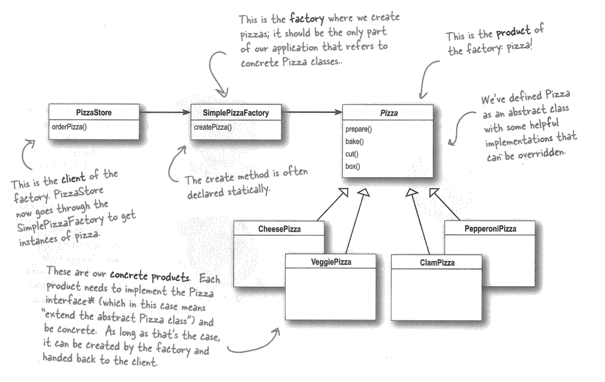

Notes
Table of Contents
- 1. Algorithm
- 2. Special Algorithms
- 3. Distributed Systems
- 4. Operating System
- 5. Parallel Computing
- 6. Java
- 7. C++
- 8. Design Pattern
- 8.1. Object Oriented
- 8.2. UML and Dependency
- 8.3. OO Principles
- 8.3.1. Liskov Substitution Principle
- 8.3.2. Encapsulate what varies
- 8.3.3. Program to interfaces, not implementations
- 8.3.4. Favor composition over inheritance
- 8.3.5. Loose couple
- 8.3.6. Interface Segregation Principle
- 8.3.7. Open-Close Principle
- 8.3.8. Dependency Inversion Principle
- 8.3.9. Principle of Least Knowledge
- 8.3.10. The Hollywood Principle
- 8.3.11. Single Responsibility Principle
- 8.4. Observer
- 8.5. Decorator
- 8.6. Factory
- 8.7. Singleton
- 8.8. Command
- 8.9. Adapter
- 8.10. Facade
- 8.11. Template Method
- 8.12. Iterator
- 8.13. Composite
- 8.14. State
- 8.15. Strategy
- 8.16. Proxy
- 8.17. Flyweight
- 9. Fluid Dynamics
- 10. Numerical Optimization
- 11. Probability and Statistics
- 12. Natural Language Processing
- 13. Principle of Programming Languages
- 14. Graph Theory
- 15. My Cheat Sheet
- 16. Others
1 Algorithm
1.1 Asymptotic bounds
1.1.1 Definitions
- \(f = O(g)\): Upper bound; There exists positive constants \(c, n_0\), such that \(0 \le f(n) \le c\cdot g(n)\) for all \(n\ge n_0\)
- \(f = \Omega(g)\): Lower bound; There exist positive constants \(c, n_0\) such that \(0 \le c\cdot g(n) \le f(n)\) for all \(n\ge n_0\)
- \(f = \Theta(g)\): Double-side bound
- \(f = o(g)\): Loose upper bound; For any (small) positive constant \(c\), there exists a positive constant \(n_0\) such that \(0 \le f(n) < c\cdot g(n)\) for all \(n\ge n_0\)
- \(f = \omega(g)\): Loose lower bound; For any (large) positive constant \(c\), there exists a positive constant \(n_0\) such that \(0 \le c\cdot g(n) < f(n)\) for all \(n\ge n_0\)
1.1.2 Rules
- Transpose symmetry
- \(f = O(g) \iff g = \Omega(f)\)
- \(f = o(g) \iff g = \omega(f)\)
- Combinations
- \(f + g = \Omega(\min(f, g))\)
- \(f + g = O(\max(f, g))\)
- \(f + o(f) = \Theta(f)\)
1.2 Bit Manipulation
1.2.1 Basic Manipulations and their Applications
- Construct a bit-mask
000100 : 1 << 2000111 : (1 << 3) - 1(Note that shift operation has a lower precedence)111111 : ~0U001100 : (1 << 4) - (1 << 2)
- AND
&- Get the value of bit:
x & mask - Check whether a number is odd:
x & 1 - Set value of a bit to 0:
x &= ~mask
- Get the value of bit:
- OR
|- Set value of a bit to 1:
x |= mask - Ceil to odd number (e.g., 3 → 3, 4 → 5):
x | 1
- Set value of a bit to 1:
- Exclusive OR, XOR
^- Result is true is the two operands are different
x ^ y == ~x ^ ~y;
- Self inverse:
(x ^ a) ^ a == x - Flip a bit:
x ^= mask(becauseb ^ 1 == 1 - bandb ^ 0 == b)
- Shift
- Note that in C++ it would pad with 1 when right-shift a negative integer
- Swap lower and higher 16 bits:
(x << 16) | (x >> 16)
1.2.2 Two's Complement
- Negative numbers are usually represented as its two's complement: (
-x)bin \(=\) 2N \(-\) (x)bin - Using this representation, signed addition is simply the same as unsigned addition.
- Some examples
| Decimal Number | Binary Representation |
|---|---|
| \(1\) | 00000000000000000000000000000001 |
| \(0\) | 00000000000000000000000000000000 |
| \(-1\) | 11111111111111111111111111111111 |
| \(-2\) | 11111111111111111111111111111110 |
| \(-3\) | 11111111111111111111111111111101 |
| \(-4\) | 11111111111111111111111111111100 |
- Note that (
~x)bin \(=\) (11111111111111111111111111111111) \(-\) (x)bin \(=\) 2N \(- 1 -\) (x)bin \(= -1 -\) (x)bin, because 2N overflowed in binary representation. We have an interesting fact: (~x)bin \(=\) (-x - 1)bin
1.2.3 Increment and Decrement
- Increment flips the rightmost 0 to 1, and all tail 1 to 0, leaving leading bits unchanged.
- Decrement flips the rightmost 1 to 0, and all tail 0 to 1, leaving leading bits unchanged.
- Both increment and decrement flips the right bits.
- Some examples about decrement
x |
010000011010 1000 | |
x-1 |
010000011010 0111 | |
x & (x-1) |
010000011010 0000 | Flip the rightmost 1 → 0 |
x or (x-1) |
010000011010 1111 | Tail 1000 → 1111 |
x & ~(x-1) |
000000000000 1000 | Extract the rightmost 1 |
- Some examples about increment
x |
010000011010 0111 | |
x+1 |
010000011010 1000 | |
x & (x+1) |
010000011010 0000 | Tail 0111 → 0000 |
x or (x+1) |
010000011010 1111 | Flip the rightmost 0 → 1 |
1.2.4 LSB(Least Significant Bit)
x &= x - 1 destroys the nonzero LSB, while x & ~(x - 1) extracts the nonzero LSB. In two's complement, it is the same as x & -x
Some applications of LSB:
- Power of 2: Destroying the nonzero LSB of \(x\) yields zero.
- Find two single numbers where others are in pair: use LSB of
a^bto bucketize all numbers, and then take XOR.
1.2.5 Arithmetic Operations using Bit Manipulations
- Add
Adding signed and unsigned numbers works the same way.
int add(int a, int b){ int sum = a ^ b; int carry = (a & b) << 1; return carry == 0 ? sum : add(sum, carry); }
- Multiply
Here we use bit shift to perform multiplying or dividing by 2.
In calculating \(a\times b\),
- If \(b = \pm 1\), we are done
- If \(b = 2k\), then \(a\times b = 2a \times {b\over2}\)
- If \(b = 2k + 1\), then \(a\times b = a + 2a\times {b\over 2}\)
int multiply(int a, int b){ if(b == 1) return a; if(b == -1) return -a; if(b & 1) return add(a, multiply(a << 1, b >> 1)); else return multiply(a << 1, b >> 1); }
- Divide \(a / b\)
The basic idea is to find the largest \(k\) such that \(b \cdot 2^k \le a\), then recursively reduce \(a\) until \(a < b\). \[{a\over b} = 2^k + {a - b\cdot 2^k \over b}\]
There is a frequent bug about left shifting: if
a = bin(10...0)andb = 1, then left shifting \(b\) will never get a larger value than \(a\) due to overflow.unsigned divide(unsigned a, unsigned b){ if(a < b) return 0; // Find the largest k such that b * 2^k <= a int k = 0; while((b << k) < a) ++k; if((b << k) > a) --k; a = add(a, -(b << k)); return add(1 << k, divide(a, b)); }
1.3 String and Array
1.3.1 Two pointers
- Check if a string is palindromic
bool isPalindromic(const string s){ if(s.empty()) return true; for(size_t i = 0, j = s.size() - 1; i < j; ++i, --j){ if(s[i] != s[j]) return false; } return true; }
- Find the longest palindromic substring
For each position, using two pointers to search for palindromic strings centered at this position.
1.3.2 Recursion
- Longest substring with at least k repeated chars
Question: find the length of the longest substring \(T\) such that every char in \(T\) appears at least \(k\) times.
- Mark all chars in the string that appears less than \(k\) times. These chars cannot be in any solution.
- For each substring split by these chars, recursively solve it.
1.3.3 Running Maximum
- Buy and sell stock once
Question: given an array of stock prices, supposing you can buy and sell one share, find the max profit
int maxProfit(vector<int>& prices){ int lowest = INT_MAX; // Running min of stock price int maxProfit = 0; // Running max of profit for(int p : prices){ lowest = min(p, lowest); maxProfit = max(maxProfit, p - lowest); } return maxProfit; }
- Buy and sell stock twice
You can buy and sell at most twice, but one transaction in a day.
int buy_and_sell_twice(vector<int> prices){ if(prices.empty()) return 0; const int N = prices.size(); vector<int> forwardP (N, 0); // Find the max profit sell at or before day i int runningMin = INT_MAX, maxP = 0; for(int i = 1; i < N; ++i){ runningMin = min(runningMin, prices[i]); maxP = max(maxP, prices[i] - runningMin); forwardP[i] = maxP; } // Find the profit buy at or after day i vector<int> backwardP (N, 0); int runningMax = INT_MIN; maxP = 0; for(int i = N - 1; i >= 0; --i){ runningMax = max(runningMax, prices[i]); maxP = max(maxP, runningMax - prices[i]); backwardP[i] = maxP; } // Find the max profit that sell at or before day i-1 and buy at or after day i runningMax = backwardP[0]; // Cannot sell at day 0 for(int i = 1; i < N; ++i){ runningMax = max(runningMax, forwardP[i - 1] + backwardP[i]); } return runningMax; }
- Longest substring without repeating char
int lengthOfLongestSubstring(string s){ vector<int> lastOccurrence (256, -1); int lastDup = -1; int maxL = 0; // Running max length of substring [lastDup + 1, i] for(int i = 0; i < s.size(); ++i){ if(lastOccurrence[s[i]] > lastDup){ lastDup = lastOccurrence[s[i]]; } maxL = max(maxL, i - lastDup); lastOccurrence[s[i]] = i; } return maxL; }
- Jump Game
Given an array of non-negative integers, you are initially positioned at index 0. Each element in the array represents your maximum jump at that position. Determine if you are able to reach the last index.
bool canJump(vector<int>& nums) { int maxIdx = 0; for(int i = 0; i < nums.size(); ++i){ if(maxIdx >= i){ maxIdx = max(maxIdx, nums[i] + i); } } return maxIdx + 1 >= nums.size(); }
1.3.4 Dynamic Programming
- Longest increasing subsequence
Question: Given an unsorted array \(A\), find the length of the longest increasing subsequence.
- Let \(L_i\) denote the length of LIS that ended at (including) \(A_i\).
- \(L_i = 1 + \max_{j
- Length of LIS is \(\max_i L_i\)
- Word Break
Given a string
sand a set of wordsvocabulary, determine if the string can be segmented into words in the vocabulary.- For a string
wordsuffix, ifsuffixis in the vocabulary, thenwordsuffixis in the vocabulary if and only ifwordis in the vocabulary.
bool wordBreak(string s, unordered_set<string>& wordDict) { if(s.empty()) return false; auto check = [&s, &wordDict](int i1, int i2){ int cnt = i2 - i1 + 1; return wordDict.count(s.substr(i1, cnt)) > 0; }; const int N = s.size(); vector<bool> canBreak (N, 0); for(int i = 0; i < N; ++i){ canBreak[i] = check(0, i); for(int j = 1; j <= i; ++j){ if(canBreak[j-1] && check(j, i)){ canBreak[i] = true; break; } } } return canBreak.back(); }
- For a string
- Palindromic partitioning
Given a string and find the min number of palindromic sub-strings that you can partition the string into.
- Buy and sell stocks up to \(k\) times
Given an array of stock prices, find the max profit by performing \(k\) buy-sell transactions.
Define tables
- \(B_{i,j}\): max money after performing j-th buy at day i
- \(S_{i,j}\): max money after performing j-th sell at day i
- Double recursion
\[ B_{i,j} = - p_i + \max_{i'
- Starting condition
\[B_{0,j} = - p_0\] \[S_{0,j} = 0\]
1.3.5 Hashing
- strstr, Find the first occurrence of a substring
- Rabin-Karp algorithm is similar to the nested loop brute force algorithm, but it omits the inner loop by comparing the hash of the sliding-window substring in the text against the hash of the needle.
- The hash function should be incremental for efficiency.
- Rabin-Karp uses the 26-base numerical value as the hash.
1.3.6 Hash table
- Find the first non-repeated char in a given string
size_t firstNonreapt(const string s){ assert(!s.empty()); const size_t maxSize = ~0U; vector<size_t> firstOccurrence (256, maxSize); for(size_t i = 0; i < s.size(); ++i){ if(firstOccurrence[s[i]] < maxSize) firstOccurrence[s[i]] = maxSize; else firstOccurrence[s[i]] = i; } return * min_element(firstOccurrence.begin(), firstOccurrence.end()); }
1.3.7 Greedy
- Buy and sell stock unlimited times
Question: Given an array of prices at day \(i\), find the max profit where you can only perform one transaction per day.
- Buy at local minimum and sell at local maximum
- Actually tracking the one-day difference is enough
int maxProfit(vector<int>& prices) { int maxP = 0; for(size_t i = 0; i + 1 < prices.size(); ++i){ maxP += max(0, prices[i + 1] - prices[i]); } return maxP; }
1.4 In-place array manipulation
1.4.1 Rotate an array
Given an array of size \(n\), rotate it by \(k\) positions
void rotate(vector<int> & A, int k){ k %= A.size(); reverse(A.begin(), A.end()); reverse(A.begin(), A.begin() + k); reverse(A.begin() + k, A.end()); }
1.4.2 Pivotify
Maintain two pointers indicating the unclassified area. Each time either accept \(u_1\) as the left class, or swap it to the right class.
void pivotify3(vector<int> & xx, int pivot){ /* _______________________________________________________ |__Smaller___|___Equal___|___Unclassified___|___Larger__| e1 u1 u2 */ int e1 = 0, u1 = 0, u2 = xx.size() - 1; while(u1 <= u2){ if(xx[u1] == pivot){ ++u1; }else if(xx[u1] < pivot){ swap(xx[e1++], xx[u1++]); }else{ swap(xx[u1], xx[u2--]); } } } void pivotify2(vector<int> & xx){ auto isOdd = [&xx](int idx){return xx[idx] % 2 != 0;}; /* In-place arrange an array into two groups ________________________________________ |__Odd_____|__Unclassified___|____Even__| u1 u2 */ int u1 = 0, u2 = xx.size() - 1; while(u1 <= u2){ if(isOdd(u1)){ ++u1; }else{ swap(xx[u1], xx[u2--]); } } }
1.5 Randomization
1.5.1 Reservoir sampling
Given a large list containing \(n\) items, where \(n\) is unknown or very large. Reservoir sampling randomly pick one item.
T sample; int N = 0; for(T x : xx){ ++N; if(rand() % N == 0) sample = x; }
1.6 Binary Heap
1.6.1 Data Structure of Heap
- Properties
- Max heap property:
node >= children - Complete binary tree; only right leaves can be missing
- For node \(i\):
- Left child: \(2i+1\)
- Right child: \(2i+2\)
- Parent: \((i-1)/2\)
- For heap size \(N\):
- height of the tree: \(\log_2 N + 1\)
- First leaf: \(N /2\)
- Max heap property:
- Operations
- Extract max: swap root with the rightmost leaf, and then sink the root down.
- Insert: append to the bottom and float it up.
- Heapify: sink the root down until it obeys the heap property
- Build heap from an array: for each \(i\) from \(N/2\) down to \(0\), heapify node \(i\).
- Heap sort: swap root with tail while shrinking heap size and heapifing the new root, until heap size reaches 1.
- STL implementation
vector<int> data = {4,2,9,8,1}; priority_queue<int> maxHeap; for(int x : data) maxHeap.push(x); assert(maxHeap.top() == 9); priority_queue<int, vector<int>, greater<int>> minHeap; for(int x : data) minHeap.push(x); assert(minHeap.top() == 1);
1.7 Binary Tree
1.7.1 Data Structures
- BST properties
- all nodes in left subtree < root < all nodes in right subtree
- Operations
- Insert:
- If root is NULL, replace the root with newly created node
- If root is larger, recursively insert it to the left child
- If root is smaller, recursively insert it to the right child
- Search: similar to insert
- Delete a node:
- If the node has no child, just delete
- If the node has one child, replace it with its chidlren
- If the node has two children, recursively replace the root with its in-order predecessor and delete the predecessor, until it reaches one of the above two base cases.
- Insert:
1.8 Dynamic Programming (DP)
1.8.1 Ideas
- Multi-stage optimization: the decisions we make at some point are influenced by the decisions we made earlier.
- The word "programming" in here means a way of tabulation.
- Similar to Divide-and-Conquer but with overlapping subproblems.
1.8.2 Longest Common Subsequence (LCS)
Given a sequence \(X = (x_1, x_2, \dots, x_m)\), where each \(x_i\) is an element of some alphabet, another sequence \(Z = (z_1, z_2, \dots, z_k)\) is a subsequence of \(X\) if there exists a strictly increasing sequence \((i_1, i_2, \dots, i_k)\) of indices of \(X\) such that for all \(j = 1,2,\dots, k\) we have \(x_{i_j} = z_j\). In the longest common subsequence problem, we are given two sequences \(X\) and \(Y\), and we wish to find a maximum length common subsequence of \(X\) and \(Y\).
- Optimal substructure
Let \(X, Y\) be sequences and \(Z\) be a LCS of \(X\) and \(Y\).
- If \(x_m = y_n\), then \(z_k = x_m = y_n\) and \(Z_{k-1}\) is an LCS of \(X_{m-1}\) and \(Y_{n-1}\).
- IF \(x_m\ne y_n\) and \(z_k\ne x_m\), then \(Z\) is LCS of \(X_{m-1}\) and \(Y\).
- IF \(x_m\ne y_n\) and \(z_k\ne y_n\), then \(Z\) is LCS of \(X\) and \(Y_{n-1}\).
- Recursive formula
Define \(c[i,j]\) to be the length of an LCS of the sequence \(X_i\) and \(Y_j\). \[ c[i,j] = \begin{cases} 0 & \mbox{if $i = 0$ or $j = 0$} \\ c[i-1, j-1] + 1 & \mbox{if $i, j >0$ and $x_i = y_j$} \\ \max\big(c[i, j-1], c[i-1,j] \big) & \mbox{if $i,j>0$ and $x_i\ne y_j$} \end{cases} \]
1.8.3 Minimum Edit Distance
Given two string \(A\) and \(B\), we find the minimum number of edits (substitution, insertion, deletion) to transform \(A\) to \(B\).
- Optimal substructure
- If \(A_m = B_n\), then we can ignore their last characters.
- If \(A_m \neq B_n\), then we need to consider pair \((A_{m-1}, B_n)\) and \((A_m, B_{n-1})\)
- Recursive formula
Let \(D[m,n]\) denote the min edit distance of string \(A_{0\dots m}\) and \(B_{0\dots n}\)
- If \(A_m = B_n\), then \(D[m,n] = D[m - 1, n - 1]\)
- If \(A_m \neq B_n\), then
\[ D[m,n] = 1 + \min \begin{cases} D[m - 1, n - 1] & \mbox{substitute} A_m \\ D[m, n - 1] & \mbox{delete} A_m\\ D[m - 1, n] & \mbox{insert} A_m \end{cases} \]
1.8.4 Combination Sum
Given a set of numbers \(a_i\), find the number of combinations of \(a_i\) (allowing duplicates) that sum to a target \(T\).
1.8.5 TODO Optimal binary search tree
Given probability of accessing each node \(k_i\) in the BST, we want to minimize total cost \(\sum_{i=1}^n p_i (\mbox{depth}_T(k_i) + 1)\)
- Optimal substructure
To determine the optimal BST is to determine the root in each subtree.
- Let \(k_r\) be the root of optimal BST containing \((k_1, k_2, \dots, k_n)\) (sorted), then the left subtree containing \((k_1, k_2, \dots, k_{r-1})\) and the right subtree \((k_{r+1}, \dots, k_n)\) must also be optimal.
- Recursive formula
Denote \(M[i,j]\) as the total cost of accessing optimal BST containing \((k_i, \dots, k_j)\). \[ M[i,j] = \]
1.8.6 TODO Rod-cutting
1.8.7 TODO Matrix-chain multiplication
1.8.8 0-1 knapsack problem
Given the value \(v_i\) and weight \(w_i\) for each of \(n\) items and a knapsack of capacity \(W\) pounds, find the items that can fit in the knapsack and maximize total value.
- Optimal substructure
Assume \(S\) is the optimal selection of capacity \(W\) and up to item \(k\).
- If \(k \in S\), then \(S\setminus k\) must be optimal to subproblem with capacity \(W - w_k\) up to item \(k-1\).
- If \(k \not\in S\), then \(S\) must be optimal to subproblem with capacity \(W\) up to item \(k-1\).
- Recursive formula
Denote \(V[k, w]\) as the value of the optimal solution to the first \(k\) items with constraint of weight \(w\). \[ V[k, w] = \begin{cases} 0 & \mbox{if $k=0$}\\ V[k-1, w] & \mbox{if $k\ne0$ and $w_k > w$} \\ \max\big( V[k-1, w], V[k-1, w-w_k] + v_k \big) & \mbox{otherwise} \end{cases}\]
1.9 Graph
1.9.1 Traversing a graph
- BFS (Breath-first search)
- Algorithm implemented with a queue
- Initialization. Color all vertices as white and setup an empty queue
- Push the source \(u\) into the queue.
- While the queue is not empty, pull one vertex \(v\) from it, push all $v$'s white neighbors (which are marked gray after being enqueued) into the queue, and mark \(v\) as black.
- Properties of BFS
- Running time \(O(V + E)\)
- BFS expands the frontier between discovered and undiscovered vertices uniformly across the breadth of the frontier.
- It discovers all vertices at distance \(k\) from the source before discovering any vertex at distance \(k+1\).
- BFS tree = shortest-path tree
- Algorithm implemented with a queue
- DFS (Depth-first search)
- Algorithm implemented with a stack
Change the queue to stack in BFS.
- Recursive algorithm
DFS(v){ v.is_discovered = True For each edge {v, u} in v.Adj { if u.is_discovered == False { DFS(u) } } } - Properties of DFS
- Running time \(O(E+V)\)
- DFS recursively explores edges out of the most recently discovered vertex \(v\) that still has unexplored out-edges. Once all of $v$'s edges have been explored, DFS backtracks to previous vertices.
- DFS timestamps each vertex with discovery and finish time.
- In DFS, discovery and finishing times have parenthesis property.
- Edge partitions with DFS: tree edges, forward edges, backward edges, cross edges.
- Algorithm implemented with a stack
- Applications of DFS
- Topological sort
- Only a DAG (Directed Acyclic Graph) can be sorted.
- All edges go forward in a topologically sorted graph.
- Algorithm: Starting with an empty list, DFS a graph. When a node finished, put the node at the head of the list.
- Running time: \(O(E+V)\)
- Strongly Connected Components (SCC)
Algorithm:
- DFS(\(G^T\)) to get finishing times.
- Let v be the vertex in \(G\) with largest finishing time.
- Run DFS\((v)\) in \(G\) to define an SCC \(C\) of all nodes found in this DFS.
- Delete \(C\) from \(G\).
- Repeat from (1) until \(G\) is empty
- Two vertices \(u\) and \(v\) are equivalent if \(u\) is reachable from \(v\) and \(v\) is reachable from \(u\).
- SCC: a maximal set in which every pair of vertices are equivalent.
- Running time: \(O(E+V)\)
- The node with largest finishing time is in a source SCC.
- Other applications
- If a directed graph has a backward edge in DFS, then it is not DAG.
- Topological sort
1.9.2 Shortest paths
- Types of shortest path
- Single source: the shortest paths from source \(v\) to all other nodes.
- Single pair: find the shortest path from \(u\) to \(v\).
- All pairs: find the shortest path from \(u\) to \(v\) for every edge \(u\to v\).
- Bellman-Ford Algorithm (single source)
- Define \(M[u,k]\) as the length of the shortest path from \(v\) to \(u\) with at most \(k\) edges.
- Dynamic programming recurrence:
- \(M[u, k] = 0\), if \(u=v, k=0\)
- \(M[u, k] = \infty\), if \(u\ne v, k=0\)
- \(M[u, k] = \displaystyle\min_{w\to u \in E} \bigg(M[w, k-1] + len(w\to u) \bigg)\), otherwise.
- Relaxation
- Define \(d(x)\) as an upper bound on its distance from the source.
- Relaxation is the process of narrowing this upper bound.
- Relax\((x,y)\): if \(d(y) > d(x) + len(x,y)\), then \(d(y) = d(x) + len(x,y)\) and \(y\).parent \(= x\).
- Dijkstra's Algorithm (single source)
- does not work if there are negative edges
- a greedy algorithm.
- start from empty, maintain and grow it to shortest path tree.
- \(T = \emptyset\)
- Set \(d(v) = 0\), where \(v\) is the source. Set all other vertices \(d(u) = \infty\)
- While not all nodes in \(T\)
- Let \(u\) be node with minimum \(d(u)\)
- Add \(u\) to \(T\)
- For each edge \(u\to x\) with \(x\not\in T\), relax\((u,x)\)
- Floyd-Warshall Algorithm (all pairs)
1.9.3 Minimum spanning tree (MST)
- Generic greedy
- Suppose \(A\) is a subset of a MST. Edge \(uv\) is safe for \(A\) if \(A\cup uv\) is also a subset of a MST.
- A cut \((S,\overline{S})\) is a partition of \(V\) into two pieces.
- An edge crosses the cut if one of its endpoints is in \(S\) and the other one not in \(S\).
- Given a set of edges \(A\), a cut respects \(A\) if no edge in \(A\) crosses the cut.
- An edge \(e\) is a light edge crossing a cut if it crosses the cut and has minimum weight.
- Let \(A\subseteq E\) be a subset of a MST, let \((S,\overline{S})\) be a cut respecting \(A\), and let \(e\) be a light edge crossing \((S, \overline{S})\). Then \(e\) is safe for \(A\).
- Prim's Algorithm
- start with a node, maintain a tree and grow it to spanning.
- \(A = \emptyset\)
- Let \(u\) be an arbitrary node, and let \(S = \{u\}\).
- While \(A\) is not a spanning tree, find an light edge \(xy\) of \((S,\overline{S})\) with \(x\in S\) and \(y\not\in S\). Set \(A = A\cup \{xy\}\) and \(S = S\cup y\).
- Return \(A\)
- Kruskal's Algorithm
- maintain a forest and stop when the forest becomes a tree.
- pure greedy.
- Running time: \(O(m \log m)\)
- \(A = \emptyset\).
- Sort the edges not in \(A\) by weight in ascending order.
- For each edge \(e\) in this order, if \(A\cup e\) has no cycles, add \(e\) to \(A\).
- Return \(A\)
1.9.4 Maximum flow
1.10 Greedy Algorithms
1.10.1 Matroid
- Let \(U\) be a universe of elements and \(I\) be a collection of subsets of \(U\). Then \((U, I)\) is a matroid if the following three properties hold:
- \(\emptyset \in I\)
- If \(F \in I\) and \(F'\subseteq F\), then \(F'\in I\)
- Augmentation property: If \(F_1\in I\) and \(F_2\in I\) with \(|F_2| > |F_1|\), then there is some element \(e\in F_2\setminus F_1\) such that \(F_1 \cup e \in I\).
- If \(F_1\in I\) and \(F_2\in I\) are both maximal, then \(|F_1| = |F_2|\).
- The size of maximal independent set is known as the rank of a matroid.
- An independence oracle is an algorithm which, when given a set \(S\subseteq U\), tells us whether \(S\in I\).
1.10.2 Greedy algorithm
Greedy algorithm applies to any matroid.
- Initialize \(F = \emptyset\).
- Sort \(U\) by weight from largest to smallest.
- Consider the elements in sorted order. For each element \(e\), add it to \(F\) if \(F\cup e\) is independent.
1.10.3 Applications
- Applied to forest: Kruskal's Algorithm.
2 Special Algorithms
2.1 Index mapping
- Reverse:
N - 1 - i - Wiggle:
(2 * i + 1) % (N | 1)
| i | 0 | 1 | 2 | 3 | 4 | 5 | 6 |
| wiggle | 1 | 3 | 5 | 0 | 2 | 4 | 6 |
2.2 Scan line
3 Distributed Systems
3.1 Network
3.1.1 7 layers of the OSI model (Open System Interconnection)
- 1. Physical layer: conveys bit stream through the network at the electrical level.
- 2. Data Link layer: at data link layer, packets are encoded and decoded into bits.
- 3. Network layer: provides switching and routing, creating logical virtual paths for data transmission.
- 4. Transport layer:
- 5. Session layer: establishes, manages, and terminates connections between applications.
- 6. Presentation layer: provides independence from data representation
- 7. Application Layer: provides host to host communication services for applications
3.1.2 Physical devices
- Router
- Router forwards data packets along networks.
- Router is connected to at least two networks.
- Switch
- Switch filters and forwards packets between LAN segments.
3.2 Point-to-Point Protocols and Links
- Data Link Control (DLC): the point-to-point protocols needed to control the passage of data over a communication link.
- To an extent, the combination of modem, physical link and modem appears to higher layers as a virtual bit pipe.
3.3 ARQ (Automatic Repeat reQuest)
ARQ is an error-control method for data transmission that uses acknowledgments and timeouts to achieve reliable data transmission over an unreliable service.
3.3.1 Stop-and-wait ARQ
3.3.2 Go-back-N ARQ
3.3.3 Selective Repeat ARQ
3.4 Socket Programming
3.4.1 Socket
- socket: one end of an interprocess communication channel
- Address domain:
- Unix domain, in which two processes share a common file system.
- Internet domain, in which two processes running on any two hosts over the internet.
- Address of a socket in internet domain consists of IP address (32 bits) and port number (16 bits)
- Two common socket types:
- stream sockets treat communications as a continuous stream of characters
- datagram sockets have to read entire messages at once.
- Protocols
- UDP: User Datagram Protocol. Short message; unreliable, connectionless.
- TCP: Transmission Control Protocol. Long streams of data; deliver the same order as sent; connection oriented.
3.5 Consensus problem
3.5.1 Failure
- Crash (or Byzantine) failure: a process abruptly stops and does not resume.
3.5.2 Timing
- Synchronous
- Processes execute in lock-step
- There is a known upper bound on message transmission delay.
- Each process has an accurate clock
- Asynchronous
- Processes executes at independent rates
- No bound on message transmission delay
3.5.3 Consensus
- The consensus problem requires agreement among a number of processes for a single data value.
- Some of the processes may fail or be unreliable
- The processes must put forth their candidate values, communicate with one another, and agree on a single consensus value.
3.5.4 Requirements
A consensus protocol tolerating halting failures must satisfy
- Termination: every correct process must decide some value
- Validity: if all processes propose the same value, then all correct processes should decide that value
- Integrity: every correct process must decide at most one value, and the value must have been proposed by some process
- Agreement: every correct process must agree on the same value
3.6 Multicast
3.6.1 Ordering
- In a distributed system, message transmission delays is not negligible compared with time between events in a single process
- Real physical time is not observable within the system
- We extend partial ordering defined by "happened before" to a consistent total ordering
- Happened-before
- If \(a\) and \(b\) are in the same process and \(a\) comes before \(b\), then \(a\to b\)
- For the same message \(m\), send(\(m\)) \(\to\) receive(\(m\))
- Transitivity: \(a\to b\) and \(b\to c\) implies that \(a \to c\)
- \(a\) and \(b\) are said to be concurrent if \(a\not \to b\) and \(b\not \to a\) (there exists no happened-before relationships)
- Logical clock
- Clock: a clock is simply a way of assigning number to an event
- Clock condition: if \(a\to b\), then \(C(a) < C(b)\). We cannot expect the converse to hold.
- Types of ordering
- Reliable:
- FIFO (Happened-before): messages are delivered in the order they were sent by any single sender
- Causal: if send(a) → send(b), then deliver(a) → deliver(b) at common destinations.
- Agreed (Total order): messages are delivered in the same order to all recipients (including the sender).
- Safe Delivery: messages is delivered after received by all processes
3.6.2 Lamport Timestamps
- provide a partial ordering of events with minimal overhead
4 Operating System
- Task: sequence of instructions that operate as a group
4.1 Process
- A process is the operating system's abstraction for a running program
- Processes provide the illusion that the program is the only one running on the system
- Processes do NOT share memory by definition.
- Each process has
- a virtual address space,
- executable code
- a unique process identifier
- at least one thread of execution
- Each process is started with a single thread (primary thread), but can create additional threads from any of its threads.
4.2 Thread
- A thread is the entity within a process that can be scheduled for execution.
- All threads of a process share virtual address space and system resources
- Each thread maintains
- exception handlers
- thread local storage
- a unique thread identifier
4.3 Memory Hierarchy
4.3.1 Cache line
- Cache line: Data is transferred between memory and cache in blocks of fixed size (usually 64 bytes), called cache lines.
- Cache entry: The cache entry includes the copied data as well as the requested memory location (called tag).
- Memory address:
- Tag:
- Index: which cache line that the data has been put in.
- Offset: 6 bits for 64 byte cache line; specifies the location of the 1-byte data within the cache line.
4.4 Mutex
5 Parallel Computing
5.1 Intro
5.1.1 Amdahl's law
- \(P\): Portion that can be optimized
- \(S\): Speedup
- Theoretical speedup: \[\frac{1}{(1 - P) + {P\over S}}\]
5.1.2 3 facts against parallelism
- Startup costs associated with initializing processes
- Interference: slowdown resulting from multiple processes accessing shared resources
- Skew: not all tasks are broken down into the same size
5.1.3 Multiple instruction, multiple data (MIMD)
- Shared memory: all processes share a single address space and communicate by writing and reading shared variables.
- SMP: symmetric multiprocessor
- NUMA: Nonuniform memory access. To mitigate the effects of nonuniform memory access, each process has a cache and keeps it coherent.
- Distributed memory: each process has its own address space and communicates by message passing.
- MPP: massively parallel processors; processors and network infrastructures are highly coupled and specialized for parallelism.
- Cluster: off-the-shelf computers connected by off-the-shelf networks
- Grids: distributed heterogeneous resources connected by LAN or WAN
5.1.4 Task
- Task: a sequence of instructions that operate together as a group.
- UE (Unit of Execution):
- process: a collection of resources that enables the execution of program instructions
- thread: a lightweight, fundamental UE
5.2 OpenMP
5.3 CUDA
5.3.1 Terminologies
- CUDA: a parallel computing platform and API model created by Nvidia.
- Host: CPU
- Device: Graphical Processing Unit
- Kernel: functions run on GPU device
5.3.2 GPU Memory Model
- Global memory: slow and uncached
- Registers: fast; for variables defined in kernels.
- Local memory: for what doesnt fit in registers, slow but cached
- Shared memory: accessible by threads within the block
- Texture memory: read only; cache optimized for 2D access.
5.3.3 Syntax
__global__ function declaration: the keyword indicates a function that runs on device and is called by from host code.mykernel<<< N_blocks, N_threads_per_block >>>();Triple angle brackets mark a call from host code to device code.- Host pointer cannot be dereferenced in device code; Device pointer cannot be dereferenced in host code.
blockIdx.xandthreadIdx.xgive the indexblockDim.xgive the number of threads per block
5.4 OpenCL
6 Java
6.1 Java Basics
6.1.1 About Java
- Platform
- Any hardware or software environment in which a program runs is known as a platform. Java is also a platform since it has its own runtime environment and API.
- Types of Java applications
- Standalone application: aka desktop or window based application; need to be installed on every machine.
- Web application: an application that runs on the server side and creates dynamic page.
- Enterprise application: is distributed in nature, such as banking applications.
- Mobile application.
- JVM (Java Virtual Machine)
- JVM is a specification of an abstract machine that provides runtime environment in which Java bytecode can be executed.

- JRE (Java Runtime Environment)
- JRE is the implementation of JVM and it provides runtime environment. JRE = JVM + libraries etc.
- JDK (Java Development Kit)
- JDK = JRE + development tools
6.1.2 Variable
A variable is name of reserved area allocated in memory.
6.1.3 Three types of variables
- local variable: declared inside a method.
- instance variable: declared inside a class but outside the method.
- static variable: declared as static; cannot be local.
6.1.4 Data types

6.1.5 What happens at runtime
- Class file
- Classloader: a subsystem of JRE that dynamically loads classes into JVM.
- Bytecode verifier: the verifier checks that the instructions cannot perform actions that are obviously damaging.
- Interpreter
- Runtime
- Hardware
6.1.6 Comparison with C++
- Call by value only.
- No multiple inheritance
- No virtual keyword (all non-static methods are virtual by default)
- Supports unsigned right shift
>>>(padding zero for negative numbers) - Single inheritance tree; all classes are children of
Object - All values get initialized.
6.1.7 Some keywords
strictfp: restricts floating-point calculations to ensure portability.
6.2 Object Oriented Java
6.2.1 Inheritance
- Whenever you create the instance of subclass, an instance of parent class is created implicitly (
super)
6.2.2 Static keyword
static is used for memory management mainly.
- Static variable can be used to refer the common property of all objects and get memory only once in class area.
- Static method belongs to the class rather than an object. We cannot override static methods.
- Static block is executed in class loader
public class Main { public static void main(String[] args) { System.out.println("main"); } static{System.out.println("Called in class loading, before main()");} }
6.2.3 Instance Initializer block
class SuperClass{ SuperClass(){ System.out.println("super() called first"); } } class SubClass extends SuperClass{ SubClass(){ System.out.println("Constructor of subclass called after initializer block"); } { System.out.println("Initializer block called after super()"); } }
6.2.4 Final keyword
The final keyword is used to restrict users.
- final variable is constant and can be initialized directly or in constructor only.
class Student{ public final String name; Student(String name){ this.name = name; } static public final String school; static { school = "No.1 middle school"; } }
- final method cannot be overridden
- final class cannot be extended
- final parameter of a function is constant
6.2.5 Runtime polymorphism, or Dynamic method dispatch
- A call to an overridden method is resolved at runtime rather than compile time.
- Note that rumtime polymorphism cannot be achieved by data members.
public class A { public static void main(String[] args){ // Call subclass method even after up casting Animal cat = new Cat(); Animal dog = new Dog(); cat.makeSound(); dog.makeSound(); } } class Animal { void makeSound(){ System.out.println("animal sound"); } } class Cat extends Animal { void makeSound(){ System.out.println("meow"); } } class Dog extends Animal { void makeSound(){ System.out.println("bark"); } }
6.2.6 Static binding and dynamic binding
- Binding: connecting a method call to the method body
- Static (early) binding: type of the object is determined at compile time by the compiler
public class A { public static void main(String[] args){ // Call subclass method even after up casting dynamicBinding(new Cat()); dynamicBinding(new Dog()); } static void dynamicBinding(Animal a){ a.makeSound(); } } class Animal { void makeSound(){ System.out.println("animal sound"); } } class Cat extends Animal { void makeSound(){ System.out.println("meow"); } } class Dog extends Animal { void makeSound(){ System.out.println("bark"); } }
6.2.7 instanceof, type comparison
instanceofcompares an instance with a type, and return true if the instance if of the type or can be cast to the type.- Before down casting, check the possibility using
instanceof
6.2.8 Abstraction
- Abstraction means hiding the implementation details and showing only functionality to users
6.2.9 Interface
- An interface is a blueprint of a class
- Interface fields are
public static finalby default. - Interface methods are
public abstractby default. - A Java class can implement multiple interfaces
- An interface with no number is known as marker or tagger interface, such as Serializable, Cloneable etc
6.3 Data Structures
6.3.1 Array
Array is fixed size in Java
int a[] = new int[5]; int b[] = {1,2,3};
6.3.2 Wrapper classes
- Wrapper class in Java provides the mechanism to convert primitive (
int) into object (Integer) and object into primitive. - Autoboxing and unboxing: the automatic conversion of primitive into objects and vise versa
- All the wrapper classes are immutable (immutable does not mean constant).
6.3.3 String
- Java
Stringis likechar[], a sequence of char. java.lang.String implements Serializable, Comparable and CharSequence- Java
Stringis immutable.StringBufferis the same asStringexcept for that it is mutable.
6.4 Exception
6.4.1 Hierarchy of Java Exception classes

6.4.2 Types of exceptions
- Checked exception: the classes that extend
ThrowableexceptRuntimeExceptionandError, such atIOException,SQLException - Unchecked exception: the classes that extend
RuntimeException, such asNullPointerException,ArrayIndexOutOfBoundsException,ArithmeticException. Unchecked exceptions usually mean the programmer made some mistakes. - Error: error is irrecoverable, such as
OutOfMemoryError,AssertionError,VirtualMachineError
6.4.3 Multiple catch
- At a time only one Exception is occurred and one catch block is executed
- All catch blocks must be ordered from most specific to most general
fianllyblock is always executed and used for important code such as closing connection
6.4.4 Declaring Exception in overriding a method
- If the parent method declares no exception, then the overriding method can only declare unchecked exception.
- If the parent method declares an exception, then the overriding method cannot declare a super-class exception.
6.5 Nested Classes
6.5.1 Inner class: non-static nested class
- Member inner class: a class created within a class and outside method
In order to instantiate a inner class, you have to instantiate an outer class.
- Anonymous inner class
Anonymous inner class should be used if you have to override method temporarily.
class B{ void method(){ System.out.println("Old method"); } } public class A { public static void main(String[] args){ B b = new B(){ void method(){ System.out.println("New method"); } }; b.method(); } }
- Local inner class: a class created within a method
6.5.2 Static nested class
public class A { static class B{ void method(){ System.out.println("Static inner class"); } } public static void main(String[] args){ B b = new B(); b.method(); } }
6.5.3 Nested interface
An interface created within class or interface. It is useful to group related interfaces so that they can be easily maintained.
interface Animal{ interface Dog{} } class Puppy implements Animal.Dog{}
6.6 Multithreading in Java
- Thread: a lightweight sub-process, a smallest unit of processing.
- Threads share a common area of memory.
6.7 Garbage Collection
7 C++
7.1 Pitfalls in C++
Here I record some mistakes that are very easy to make in C++.
7.1.1 Overflow and Underflow
- Avoid adding two
intnumber when an easy alternative exists
int mid = (left + right) / 2;
- Avoid decrementing index of
size_ttype.
for(size_t i = 0, j = num.size() - 1; i <= j; ++i, --j){ // If num.size() == 1, then the next step j would underflow }
7.1.2 Implicit cast
inttounsignedA signed number is implicitly cast into unsigned before adding, and it may cause counter-intuitive results:
assert(0U - 1 == -1); assert(0U - 1 > 0);
A common bug could occur when you want to loop through from the first to the second last element of a vector. Since
size()is unsigned, and if the vector is empty, the loop will not be skipped.vector<int> xx; // Empty for(size_t i = 0; i < xx.size() - 1; ++i){ // Loop will not stop until i = 4294967295 } for(size_t i = 0; i + 1 < xx.size(); ++i){ // Loop will be skipped (avoid adding int with unsigned) }
inttoboolintwill be implicitly cast intobool. If you mistakenly type&as&&, then it still compiles but lead to different result.int x = 0x0f, y = 0xf0; assert((x & y) == 0); assert((x && y) == 1);
7.1.3 Vector
- When initializing a nested vector,
{}is NOT the same as{{}}.{}is an empty vector, while{{}}is a size-1 vector containing an empty list. - It is always easy to forget that vector does NOT check index bound. If you are not confident with the index, use
at().
vector<int> xx = {0,1}; try{ cout << xx.at(99); }catch(out_of_range e){ // If out of range, at() will raise exception. }
- C++ does not check iterator bound either. Dereferencing an out-of-range iterator will occur segmentation fault.
- The input range for a STL algorithm is a close-open range (NOT including the later iterator).
xx = {0,1,2,3,4}; vector<int> sub (xx.begin() + 1, xx.begin() + 3); assert(sub == vector<int> ({1,2}));
7.1.4 Char
- In C++ char type is more like integer.
assert( to_string('a') != "a" ); assert( to_string('a') == "97" );
- Char can be used to index an array syntactically, hiding some serious bugs
vector<int> xx = {0, 1, 2, 3}; assert( & xx['1'] != & xx[1] ); assert(string('1', 65) == "AAAAAAAAAAAAAAAAAAAAAAAAAAAAAAAAAAAAAAAAAAAAAAAAA");
7.1.5 Boolean
- Size of
boolis implementation-defined, not specified by the standard. It could be 1 byte instead of 1 bit. - Use
!varto flip aboolvariable.
bool a = false; assert( ~a != true ); assert( !a == true );
7.2 Techniques
7.2.1 Logical operators
- There is no logical XOR operator. Use
a != binstead. Do NOT use bitwise XOR^.
7.2.2 Assertion
- Use assertion to reveal bugs in the code.
- In production, to improve efficiency define
NDEBUGto ignore all assertions.
// #define NDEBUG #include<assert.h> int main(){ assert(true); }
7.3 Causes of Segmentation Fault
- Out-of-range iterator
- Uninitialized pointer
pop()on an empty stack or queue.- Infinite function call stack
7.4 Templates
7.4.1 File IO
#include<iostream> #include<fstream> #include<sstream> #include<vector> using namespace std; template<typename T> ostream & operator<<(ostream & os, vector<T> xx){ for(T x : xx) os << x << " "; return os; } vector<string> split(string input, char delimiter){ stringstream ss (input); string word; vector<string> result; while(getline(ss, word, delimiter)){ result.push_back(word); } return result; } int main(){ // Read file by line ifstream infile ("test.txt"); if(infile.is_open()){ string line; while(getline(infile, line, '\n')){ cout << split(line, ',') << endl; } infile.close(); } // Write file ofstream outfile ("out.txt"); if(outfile.is_open()){ outfile << "Write to file as a stream\n"; } }
7.4.2 Timer
#include<iostream> #include<chrono> #include<vector> typedef std::chrono::high_resolution_clock HRTime; typedef std::chrono::time_point<HRTime> TimePoint; typedef std::chrono::duration<float> FloatSecond; void task(){ std::vector<int> xx (1 << 25, 0); for(int & x : xx) x = rand(); } int main(){ TimePoint t0 = HRTime::now(); task(); TimePoint t1 = HRTime::now(); float duration = ((FloatSecond)(t1 - t0)).count(); std::cout << duration << " second\n"; }
8 Design Pattern
8.1 Object Oriented
8.1.1 Abstraction
- Abstraction refers to the act of representing essential features without including the background details or explanations.
- The idea of abstraction focuses on the outside view of an object
8.1.2 Encapsulation
- Encapsulation is a technique used for hiding the properties and behaviors of an object and allowing outside access only as appropriate.
- It prevents other objects from directly altering or accessing the properties of methods of the encapsulated object.
8.1.3 Inheritance
- Inheritance is the process by which objects of one class acquire the properties of objects of another class.
- Two reasons two use inheritance: promote code reuse; to use polymorphism.
8.1.4 Polymorphism
- One interface, many implementation
- assigning a different meaning or usage to something in different context.
8.2 UML and Dependency

- Association
- Association is any kind of link or dependency between two classes.
- Dependency
- If A depends on B, then A has to change if B is modified, while B does not necessarily need to change if A is modified.
- We put the arrow nearby B to indicate that A depends on B.
- Weak Association
- Class A may be linked to Class B if one of its methods includes a parameter or return instance of Class B. B is local in Class A.
- Strong Association
- Class A holds a reference to Class B instance.
- B is global in Class A.
- Aggregation (Shared association)
- Compositions that happen dynamically
- Whole-part relationship.
- Person continues to exist after his Company dies.
- Person can also be aggregated to other classes.
- Composition (Non-shared association)
- Person owns Leg and Hand.
- Leg has no purpose without Person.
8.3 OO Principles
8.3.1 Liskov Substitution Principle
- Functions that use references to super-classes must be able to use objects of subclasses without knowing it.
- Sounds right in natural language does not always work in code.
- E.g. A square is a rectangle, but
Squarecannot be the subclass ofRectangle - A subclass contains all fields of its super-class and possibly more.
8.3.2 Encapsulate what varies
- Identify the aspects of your application that vary, and separate them from what stays the same, so that later you can alter or extend the parts that vary without affecting those that don't.
- All design patterns provide a way to let some part of a system vary independently of all other parts.
8.3.3 Program to interfaces, not implementations
The declared type of the variables should be a supertype (Java interface or abstract class), so that the objects assigned to those variables can be of any concrete implementation of the supertype, which means the class declaring them doesn't have to know about the actual object types.
interface Animal { String makeSound(); } class Dog implements Animal { public String makeSound(){return "bark";} } class Cat implements Animal { public String makeSound(){return "meow";} } public class DemoInterface { private static void printSound(Animal animal){ // We don't need to know if it is a dog or cat or whatever. System.out.println( animal.makeSound() ); } public static void main(String[] args){ // We can assign the concrete implementation object at runtime. printSound(new Dog()); printSound(new Cat()); } }
8.3.4 Favor composition over inheritance
- "Has-a" relationship can be better than "Is-a" relationship since it is more flexible.
- With composition, objects can dynamically change behaviors at runtime
- With inheritance, objects are fixed after compilation.
8.3.5 Loose couple
Strive for loosely coupled designs between objects that interact.
8.3.6 Interface Segregation Principle
- No clients should be forced to depend on methods it does not use.
- Split large interfaces into smaller and specific ones.
- E.g. Sign up and Login should be two separate interface.
8.3.7 Open-Close Principle
Classes should be open for extension, but closed for modification
8.3.8 Dependency Inversion Principle
Depend on abstractions; do not depend on concrete classes.
8.3.9 Principle of Least Knowledge
reduce the interactions between objects to just a few close friends.
8.3.10 The Hollywood Principle
- Don't call us; we'll call you.
- We allow low-level components to hook themselves into a system, but the high-level components determines when and how they are needed.
- Ref: Template Method Pattern.
8.3.11 Single Responsibility Principle
- Every responsibility of a class is an area of potential change.
- More than one responsibility means more than one area of change.
- A class should have only one reason to change.
8.4 Observer
- aka: publish/subscribe (pub/sub)
- Define a one-to-many dependency so that when one subject changes state, all its dependents are notified and updated automatically.
- Used in MVC: views register as observer so they can update when data changes.
import java.util.Observable; import java.util.Observer; class MyData extends Observable{ // Data in the model-view paradigm private int data; public int getData(){ return data; } public void setData(int data){ this.data = data; super.setChanged(); super.notifyObservers(); } } class Display implements Observer{ @Override public void update(Observable o, Object arg){ MyData myData = (MyData) o; System.out.println("Updated: " + myData.getData()); } } public class DemoObserver{ public static void main(String[] args){ MyData myData = new MyData(); myData.addObserver(new Display()); myData.setData(5); } }
8.5 Decorator
- The decorator pattern attaches additional responsibilities to an object dynamically.
- Decorators provide a flexible alternative to subclassing for extending functionalities.
- Decorators have the same super type as the objects they decorate, and you can use one or more decorators to wrap the object.
- The decorator adds its own behavior before and/or after delegating to the object it decorates.
Componentcan be either an abstract class or in interface.
interface Beverage { // The component String toString(); } abstract class Decorator implements Beverage { protected Beverage wrappedObj; } class Coffee implements Beverage { // Concrete component public String toString(){return "Coffee";} } class AddMilk extends Decorator { // Concrete decorator public AddMilk(Beverage c){ wrappedObj = c; } public String toString(){ return wrappedObj.toString() + " + Milk"; } } public class DemoDecorator { public static void main(String[] args){ Beverage coffee = new Coffee(); System.out.println( coffee ); Beverage coffeeMilk = new AddMilk(coffee); System.out.println( coffeeMilk ); } }
8.6 Factory
8.6.1 Simple Factory
- In the Factory Pattern, we create objects without exposing the creation logic to the client and refer to newly created objects using a common interface.
- A Simple Factory is any method that makes objects for more than one possible classes.

enum PizzaType {Veggie, Cheese} interface Pizza { void show(); } class Veggie implements Pizza { public void show(){ System.out.println("Veggie pizza"); } } class Cheese implements Pizza { public void show(){ System.out.println("Cheese pizza"); } } class SimplePizzaFactory { public static Pizza makeShape(PizzaType t) { switch (t){ case Cheese: return new Cheese(); case Veggie: return new Veggie(); default: return null; } } } public class DemoSimpleFactory { public static void main(String[] args){ // No need to know the specific pizza types. Pizza s1 = SimplePizzaFactory.makeShape( PizzaType.Cheese ); s1.show(); Pizza s2 = SimplePizzaFactory.makeShape( PizzaType.Veggie ); s2.show(); } }
8.6.2 Factory Method Pattern
- The Factory Method pattern defines an interface for creating an object, but lets subclasses decide which class to instantiate.
- Factory Method lets a class defer instantiation to subclasses.
- The Creator class is written without knowledge of the actual products that will be created.
8.6.3 Abstract Factory Pattern
8.7 Singleton
- The Singleton pattern ensures a class has only one instance, and provides a global point of acceding it.
- No public constructor.
class Singleton { private static Singleton uniqueInstance; // Make the constructor private such that it cannot be called from outside. private Singleton(){} public static Singleton getInstance() { if(uniqueInstance == null){ uniqueInstance = new Singleton(); } return uniqueInstance; } } public class DemoSingleton { public static void main(String[] args){ Singleton singleton = Singleton.getInstance(); } }
8.8 Command
- The Command Pattern encapsulates a request as an object, thereby letting you parameterize other objects with different requests, queue or log requests, and support undoable operations.
- It packages the actions and the receiver into an object that exposes just one method,
execute(). - The command object defines a binding between an action and its receiver.
8.9 Adapter
Adapter Pattern converts the interface of a class into another interface the clients expect.
8.10 Facade
- Facade Pattern provides a unified interface to a set of interfaces in a system.
- Facade defines a higher level interface that makes the subsystem easier to use.
8.11 Template Method
- Template Method Pattern defines the skeleton of an algorithm in a method, deferring some steps to subclasses
- Template Method lets subclasses redefine certain steps of an algorithm, but prohibits changing the algorithm's structure.
final methodcould be used in Java to prevent method overwriting.
8.12 Iterator
The Iterator Pattern provides a way to access the elements of an aggregate object sequentially without exposing its underlying representation.
8.13 Composite
- The Composite Pattern allows you to compose objects into tree structures to represent part-whole hierarchies.
- Composite lets clients treat individual objects and compositions of objects uniformly.
- A composite contains components
8.14 State
- The State Pattern allows an object to alter its behavior when its internal state changes.
- The object will appear to change its class.
- State Pattern is similar to Strategy Pattern but with different intent.
- With State Pattern, we have a set of behaviors encapsulated in state objects; at any time the context is delegating to one of those states.
- With Strategy Pattern, the client usually specifies the strategy object that the context is composed with.
8.15 Strategy
- The Strategy Pattern defines a family of algorithms, encapsulates each one, and makes them interchangeable.
- Strategy enables the algorithms vary independently from clients that use it.
interface Strategy { // All algorithms are interchangeable because they implement the same interface int run(int x1, int x2); } class Add implements Strategy { // Each algorithm is encapsulated in a class public int run(int x1, int x2){return x1 + x2;} } class Multiply implements Strategy { public int run(int x1, int x2){return x1 * x2;} } class Client { private Strategy strategy; public Client(Strategy strategy){ this.strategy = strategy; } public int executeStrategy(int x1, int x2){ return strategy.run(x1, x2); } } public class DemoStrategy { public static void main(String[] args){ Client client = new Client(new Add()); int result = client.executeStrategy(3, 4); } }
8.16 Proxy
- Proxy provides a surrogate or placeholder for another object to control access to it.
- A remote proxy controls access to a remote object
- A virtual proxy controls access to a resource that is expensive to create.
- A protection proxy controls access to a resource based on access rights.
8.17 Flyweight
- Use one instance of class to provide many virtual instances.
- Instead of creating many instances of a class, create one aggregate instance storing array of data.
- Saves memory but all virtual instances have to behave in the same way.
9 Fluid Dynamics
9.1 Mathematical Background
9.1.1 Tensor
- Identity tensor
Also know as substitution tensor or Kronecker delta: \[\delta_{ij} = \begin{cases} 1 & i=j \\ 0 & i\ne j \end{cases}\] It is called substitution tensor because \(\delta_{ij}v_j = v_i\)
- Alternating unit tensor
\[\varepsilon_{ijk} = \begin{cases} 1 & ijk = 123, 231, 312 \\ -1 & ijk = 321, 213, 132 \\ 0 & \mbox{if any two indices are alike} \end{cases}\] \(\varepsilon_{ijk}\) is equivalent to cross product: \[\va\times \vb = \varepsilon_{ijk} a_j b_k\]
- \(\varepsilon_{ijk} \varepsilon_{ilm} = \delta_{jl}\delta_{km} - \delta_{jm}\delta_{kl}\)
- Tensor Decomposition
- Tensor \(Q_{ij}\) is symmetric if \(Q_{ij} = Q_{ji}\)
- Tensor \(R_{ij}\) is anti-symmetric if \(R_{ij} = -R_{ji}\)
- Any tensor can be decomposed into the summation of a symmetric tensor and an anti-symmetric tensor
\[ T_{ij} = T_{[ij]} + T_{(ij)},\quad T_{(ij)} = {T_{ij} + T_{ji}\over 2}, \quad T_{[ij]} = {T_{ij} - T_{ji}\over 2} \]
- Inner Product
Inner product of two tensor is a scalar \[T:S = T_{ij} S_{ji}\]
- Dual Vector
The dual vector \(d_i\) of a tensor \(T_{jk}\) is defined as \[ d_i = \varepsilon_{ijk} T_{jk} \]
- Dyadic Product
The dyadic product or tensor product of two vector \(u_i, v_i\) is defined as \[T_{ij} = u_i v_j\]
- Derivative
\[d\phi = \partial_i \phi d x_i = \nabla \phi \cdot d\vx\] Using directional cosine \(d\vx = \valpha ds\), we can define the directional derivative \[\dd{\phi}{s} = \nabla \phi \cdot \valpha \]
9.1.2 Gauss (Divergence) Theorem
- Index notation: \[ \int_{\Omega} \partial_i F \dV = \int_{\partial\Omega} n_i F \dS \]
- \(\Omega\) is an arbitrary control volume with fixed geometry (not time dependent)
- \(\partial \Omega\) denotes the boundary of \(\Omega\)
- \(\vn\) is the outward normal of \(\Omega\)
- If \(\Omega\) is in 1D: \[ \int_a^b \dd{f}{x} \dx = f(b) - f(a) \]
- For scalar \(f\): \[ \int_{\Omega} \nabla f \dV = \int_{\partial\Omega} \vn f \dS \]
- For vector \(\vu\): \[ \int_{\Omega} \nabla \cdot \vu \dV = \int_{\partial\Omega} \vn \cdot \vu \dS \]
9.1.3 Stokes's Theorem
\[ \int \vn \cdot \nabla \times \vu \dS = \int \vt\cdot \vu \ds \]
9.1.4 Leibnitz's Theorem
\(F(\vx, t)\) is a scalar, vector or tensor function, and the region of integration \(\Omega(t)\) may be moving with velocity \(\vw\). Leibnitz's Theorem says that we may move the time derivative inside the volume integral if we add a surface integral to compensate for the motion of the boundary. \[ \dd{}{t} \int_{\Omega(t)} F(x_i, t) \dV = \int_{\Omega} \pp{F}{t} \dV + \int_{\partial\Omega} n_k w_k F \dS \]
9.2 Motion Equations
9.2.1 Convective derivative
- Also known as:
- total derivative
- advective derivative
- Lagrangian derivative
- substantive or material derivative
- Stokes derivative
- Definition
Convective derivative is the time rate of change for a material element subjected to a space-and-time dependent macroscopic velocity field. \[\dd{f}{t} = \pp{f}{t} + \vu\cdot \nabla f \] The key thing to note is that \(\vx(t)\) is also time dependent, and thus \[\dd{f(\vx(t),t)}{t} = \pp{f}{t} + \pp{f}{\vx}\pp{\vx}{t} = \pp{f}{t} + \vu\cdot \nabla f \]
- For vector variable
If \(\vf\) is a vector variable depending on \(\vx\) and \(t\), then \[ \dd{\vf}{t} = \pp{\vf}{t} + \vu \cdot \nabla \vf \] or using index notation \[d_t f_i = \partial_t f_i + u_j \partial_j f_i \]
9.2.2 Continuity Condition
Continuity requires that anything goes into \(\Omega\) must the mass it contains. \[ \int_{\partial \Omega} \rho \vu (-\vn) \dS = \dd{}{t} \int_{\Omega} \rho \dV \] using Divergence Theorem we get \[ \nabla \cdot (\rho \vu) + \dd{\rho}{t} = 0 \] For incompressible flow (\(\rho=\) constant), it reduces to \[\nabla \cdot \vu = 0\]
9.2.3 Momentum equation
Momentum equation can be derived from Newton's second law of motion: (rate of change of momentum of a control volume \(\Omega\)) = (net force on \(\Omega\)). \[ \dd{}{t} \int_{\Omega}\rho\vu \dV = \int_{\partial\Omega} \sigma \cdot \vn \dS + \int_{\Omega} \vf \dV \] where \(\sigma\) is the stress tensor, \(\vf\) is the body force.
In differential form \[ \dd{\rho\vu}{t} = \nabla\cdot\sigma + \vf \]
9.3 Navier-Stokes Equation
9.3.1 Constitutive relationship of newtonian fluids
The stress tensor can be decomposed into isotropic part and viscous part: \[\sigma_{ij} = - p\delta_{ij} + \tau_{ij} \] In Newtonian incompressible flow, we assume \[\tau_{ij} = \mu (\partial_i u_j + \partial_j u_i) \] Substituting into the momentum equation leads to \[ \rho\pp{\vu}{t} + \rho \vu\cdot \nabla \vu = -\nabla p + \mu \nabla^2 \vu + \vf \] If we drop the inertial term \(\rho\vu\cdot\nabla\vu\), then we obtain the Stokes Equation, which is the linearization of NS equation at low Reynolds number (\(Re = \rho U L /\mu\)).
9.4 Finite Element Methods
9.4.1 Discretization
- Test function: defined locally.
- Shape function: used to represent the candidate solution.
In Galerkin FEM, the shape functions are of the same sort as the test functions.
10 Numerical Optimization
10.1 Linear Algebra
- Positive definite
- A square matrix \(A\) is positive definite if \(x^T A x > 0\) for all nonzero \(x\in \R^n\). All eigenvalues of a symmetric positive definite matrix are positive.
- Positive semi-definite
- A square matrix \(A\) is positive definite if \(x^T A x \ge 0\) for all \(x\in \R^n\).
- Singularity
- Let \(A\) be a square matrix, then the followings are equivalent:
- \(A\) is nonsingular
- For any \(b\in \R^n\), there exists \(x\in\R^n\) such that \(Ax=b\)
- Determinant \(|A| \ne 0\)
- \(A\) has an inverse.
- Orthogonal
- A square matrix \(Q\) is orthogonal if \(Q^T Q = Q Q^T=I\). We also have \(Q^{-1} = Q^T\)
- Vector Norm
- \[||x||_p = \left(\sum_i |x_i|^p \right)^{1\over p} \]
- Matrix Norm
- Matrix norm is derived from vector norm: \[ ||A|| = \sup_{x\ne 0} {||Ax||\over ||x||} \]
- 1-norm is the maximum absolute column sum \[ ||A||_1 = \max_j \sum_i |A_{ij}| \]
- 2-norm is the largest eigenvalue of \(\sqrt{A^T A}\)
- \(\infty\) -norm is the maximum absolute row sum \[ ||A||_{\infty} = \max_i \sum_j |A_{ij}| \]
- Frobenius norm (not consistent with vector norm) \[||A||_F = \sqrt{\sum_{i,j} A^2_{ij}} \]
- Condition number
- Condition Number of a nonsingular matrix is defined as \[\kappa(A) = ||A|| \cdot ||A^{-1}||\]
- Eigenvalue
- For a square matrix \(A\in \R^{n\times n}\), if there is a nonzero vector \(q\) such that \[Aq = \lambda q\] then \(\lambda\) is an eigenvalue and \(q\) is an eigenvector.
- Rank
- Rank of a matrix is the dimension of the vector space generated by its columns or rows. Any rank-1 matrix can be written as \(\vu \vv^T\), where \(\vu, \vv \in \R^{n\times1}\)
10.1.1 Matrix Decomposition
- Singular Value Decomposition (SVD)
- If \(A\in \R^{n\times n}\) is symmetric, its spectral decomposition is given by \[ A = Q\Lambda Q^T\] where \(\Lambda = \mathrm{diag}(\lambda_1, \lambda_2, \dots, \lambda_n)\), and eigenvector matrix \(Q=[q_1, q_2, \dots q_n]\)
10.2 Overview
- Three components of an optimization problem
- Objective: a quantitative measure of the performance of the system under study.
- Variables: the objective depends on certain characteristics of the system.
- Constraint: often the variables are constrained.
- Math formulation
\[ \min_{\vx\in R^n} f(\vx) \quad s.t. \begin{cases} c_i(\vx) = 0 & i \in \E \quad (\mbox{Equality constraints}) \\ c_i(\vx) \ge 0 & i \in \I \quad (\mbox{Inequality constraints}) \end{cases} \]
- Minimizers
- Global: \(f(x^*) \le f(x) \forall x\)
- Local: \(\exists\) a neighborhood \(\N\), such that \(f(x^*) \le f(x) \forall x \in \N\)
- Strict local: \(\exists\) a neighborhood \(\N\), such that \(f(x^*) < f(x) \forall x \in \N\) and \(x\ne x^*\)
- Isolated: \(\exists\) a neighborhood \(\N\), such that \(x^*\) is the only local minimizer.
- Hessian
- Hessian is a square matrix of second order partial derivatives. \(\nabla^2 f = H_{ij} = \partial_i\partial_j f\)
- Jacobian
- Jacobian is the matrix of all first-order partial derivatives of a vector valued function. Suppose \(\vf: \R^n\to \R^m\), then \(J \in \R^{m\times n}\) matrix:
\[ J = \dd{\vf}{\vx} \mbox{ or } J_{ij} = \pp{f_i}{x_j}\]
10.2.1 Convexity
- Convex set
- For any two point \(x, y \in S\), if \(\alpha x + (1-\alpha) y \in S\) for all \(\alpha\in [0,1]\), then \(S\) is a convex set.
- Convex function
- A function \(f\) is convex if its domain \(S\) is convex and for any two points \(x, y\in S\) and \(\alpha \in [0,1]\), we have
\[ f(\alpha x + (1-\alpha) y) \le \alpha f(x) + (1-\alpha) f(y) \]
- Global minimizer
- If the objective and feasible region are both convex, then any local minimizer is in fact a global minimizer.
- Convex optimization
- Three requirements:
- The objective is convex
- The equality constraint are linear (otherwise it wouldn't be convex region)
- The inequality constraints are concave (because we let \(c_i(x)\ge 0\)).
10.2.2 Taylor's Theorem
- Let \(k\ge 1\) be an integer, function \(f: \R\to \R\) be k-times differentiable at point \(a\in \R\), then there exists a function \(h_k: \R\to \R\) such that
\[f(x) = \sum_{i=0}^k {f^{(i)}(a) \over i!} (x-a)^i + h_k(x)(x-a)^k \mbox{ and }\lim_{x\to a} h_k(x) = 0\]
- Remainder \(R_k(x) = h_k(x)(x-a)^k\) goes to zero faster than \((x-a)^k\).
- Vector form: Suppose that \(f: \R^n \to \R\) is continuously differentiable and that \(p\in \R^n\), then we have some \(t\in (0,1)\) such that \[f(x+p) = f(x) + p^T \nabla f(x+ tp)\] and \[f(x+p) = f(x) + p^T \nabla f(x) + {1\over2} p^T \nabla^2 f(x+ tp) p\]
- Integral form: \[\nabla f(x+p) = \nabla f(x) + \int_0^1 \nabla^2 f(x+tp) \cdot p dt \]
10.3 Unconstrained Optimization
10.3.1 Unconstrained Optimality Condition
- 1st order Necessary
- \(x^*\) is a local minimizer \(\Rightarrow \nabla f(x^*) = 0\)
- 2nd order Necessary
- \(x^*\) is a local minimizer \(\Rightarrow \nabla f(x^*) = 0\) and \(\nabla^2 f(x^*)\succeq 0\) (positive semi-definite)
- 2nd order Sufficient
- \(x^*\) is a strict local minimizer \(\Leftarrow \nabla f(x^*) = 0\) and \(\nabla^2 f(x^*)\succ 0\) (positive definite)
10.3.2 Line Search
- In the line search strategy, the algorithm chooses choose a direction \(p_k\) and searches along this direction for a lower objective.
- Subproblem: \(\min_{\alpha>0} f(x_k + \alpha p_k)\)
10.3.3 Line Search Directions
- Steepest descent direction
- \(p_k = -\nabla f_k\)
- Newton direction
- \(p_k^N = -(\nabla^2 f_k)^{-1} \nabla f_k\).
- Newton direction is derived from 2nd order Taylor approximation of \(f(x_k+ p)\).
- Newton direction can be used if \(\nabla^2 f_k\) is positive definite.
- Quasi-Newton direction
- Does not require computation of Hessian.
- From the integral form of Taylor's Theorem, we have \(\nabla f(x+p) - \nabla f(x) \approx \nabla^2 f(x)\cdot p\)
- Hessian approximation should mimic the property and satisfies the secant equation:
\[B_{k+1} s_k = y_k \quad s_k = x_{k+1} - x_k \quad y_k = \nabla f_{k+1} - \nabla f_k\]
- Two popular approximations: SR1 (Symmetric Rank one) and BFGS
- Conjugate gradient direction
- \(p_k = -\nabla f_k + \beta_k p_{k-1}\), where \(\beta_k\) is a scalar that ensures that \(p_k\) and \(p_{k-1}\) are conjugate.
10.3.4 Trust Region
- In the trust region strategy, the information gathered about \(f(x)\) is used to construct a model function \(m_k(x)\) whose behavior near the current point \(x_k\) is similar to that of \(f(x)\).
- Subproblem: \(\min_p m_k(x_k + p)\), where \(x_k + p\) lies inside the trust region.
10.4 Least Square Problems
10.4.1 Problem Formulation
In least-square problems, the objective \(f\) takes the form: \[ f(x) = {1\over2} \vr\cdot \vr = {1\over2} \sum_{j=1}^m r_j^2(x) \] where each \(r_j : \R^n \to \R\) is a smooth residual function, and \(m \ge n\).
10.4.2 Solving
- Gradient: \[ \nabla f = J^T \cdot \vr, \mbox{where } J = \pp{\vr}{\vx} \]
- Hessian \(H=\nabla^2 f\): The first item is available cheaply \(J^T J\)
\[H_{ij} = (\partial_i r_k)(\partial_j r_k) + r_k \partial_i \partial_j r_k\]
10.4.3 Linear Least Square
If \(f(x) = {1\over2} |Ax-b|^2\), then \(J = A\) and setting \(\nabla f = A^T (Ax-b) = 0\) gives the normal equation \[ A^T A x = A^T b \]
10.5 Constrained Optimization
- Active set \(\A(x)\)
- The active set \(\A(x)\) at any feasible \(x\) consists of the equality constraints indices from \(\E\) and indices of tight inequality constraints.
\[ \A(x) = \E \cup \{i\in \I | c_i(x) =0 \} \]
- Tangent cone \(T_{\Omega}(x^*)\)
- The set of all tangents (limiting direction of a feasible sequence) to \(\Omega\) at \(x^*\).
- The set of linearized feasible directions \(\F(x)\)
- Given a feasible point \(x\) and active set \(\A(x)\), the set of linearized feasible directions \(\F(x)\) is \[ \F(x) = \{d | d^T \nabla c_i(x) = 0 \forall i \in \E \mbox{ and } d^T \nabla c_i(x) \ge 0 \forall i \in \A(x)\cap \I \} \]
- Constraint qualifications
- Constraint qualifications are assumptions that ensure similarity of the constraint set \(\Omega\) and its linearized assumption, in a neighborhood of \(x^*\).
- LICQ (Linear Independence Constrains Qualification)
- Given a feasible \(x\) and active set \(\A(x)\), LICQ holds if the set of active constraint gradients \(\{\nabla c_i, i\in \A(x)\}\) is linearly independent. If LICQ holds, none of the active constraint gradients can be zero.
- Lagrangian multiplier vectors
- \[L(x, \lambda) = f(x) - \sum_{i\in E\cup I}\lambda_i c_i(x) \]
- \(\lambda_i^*\) indicates how hard \(f\) is pushing or pulling the solution \(x^*\) against the particular constraint \(c_i\).
- \(\lambda_i^* = 0\) for inactive constraints and it indicates that \(c_i\) is not significant.
10.5.1 KKT (1st order Necessary) condition
Suppose \(x^*\) is a local solution and LICQ holds for \(x^*\), then there is a Lagrangian multiplier vector \(\lambda^*\) such that
- Stationarity: \[\nabla_x L(x^*, \lambda^*) = \nabla f - \sum_{i\in A(x^*)} \lambda^*_i \nabla c_i = 0\]
- Primal feasibility: \(c_i(x^*) = 0\), for all \(i\in \E\) and \(c_i(x^*) \ge 0\), for all \(i\in \I\)
- Dual feasibility: \(\lambda^*_i \ge 0\), for all \(i \in \I\)
- Complementarity condition: \(\lambda^*_i \cdot c_i(x^*) = 0\), for all \(i\in I\). either constraint \(c_i\) is active or \(\lambda^*_i = 0\)
10.5.2 Notes about KKT
- We used \(\ge\) symbol for inequality constraints such that \(\nabla c_i(x)\) always points toward the feasible region for \(i \in \I\)
10.5.3 Proof of KKT
- Let \(x^*\) be a feasible point, then \(T_{\Omega}(x^*) \subset \F(x^*)\). If the LICQ is satisfied at \(x^*\), then \(T_{\Omega}(x^*) = \F(x^*)\)
- A cone in \(\R^n\) can be represented by all its arbitrary vectors: \(\vk = \vB\vy + \vC\vw\), where \(\vB = [\vb_1, \vb_2, \dots, \vb_m] \in \R^{n\times m}\), \(\vy \ge 0\) and \(\vC\in \R^{n\times p}\).
- If a cone lies on one side of a directional hyper plane (represented by its normal vector \(\vd\)), then \(\vk^T \vd \ge 0\) for all \(\vy >0\) and \(\vw\), i.e., \(B^T d\ge 0\) and \(C^T d=0\).
- Farkas Lemma: Given a vector \(g \in \R^n\) and a cone \(K = \{By + Cw | y\ge 0\}\), then exactly one of the following is true:
- The vector is in the cone: \(g \in K\)
- There is a plane with normal \(d\) that separates \(g\) from \(K\), i.e., \(g^T d<0\), \(B^T d\ge 0\) and \(C^T d=0\)
- Now we can prove KKT
- If \(x^*\) is a local solution, then \(\nabla f(x^*) ^T d \ge 0\) for all \(d\in T_{\Omega}(x^*)\), otherwise we have a feasible descent direction.
- If the LICQ is satisfied, then \(\nabla f(x^*) ^T d \ge 0\) for all \(d\in \F(x^*)\)
- Let the cone be \[K = \left\{ \sum_{i\in\A(x^*)} \lambda_i \nabla c_i(x^*) \bigg| \lambda_i \ge 0 \forall i \in \A(x^*)\cap \I \right\}\], and the vector \(g = \nabla f(x^*)\), using Farkas Lemma then either \(g\in K\) or there exists plane normal \(d\) separating \(\nabla F(x^*)\) and \(K\).
- In the case of \(d\in K\), we can construct required Lagrangian multipliers; In the latter case, \(d\) is a feasible descent direction since \(d\in \F(x^*)\).
10.6 Duality
- Infimum and Supermum
- Infimum: greatest lower bound; Supremum: least upper bound.
- If \(A\subseteq B\), then \(\sup A \le \sup B\) and \(\inf A \ge \inf B\)
- \(\inf(-A) = - \sup A\), \(\sup(-A) = - \inf A\)
- \(\inf (A + B) \ge \inf A + \inf B\)
- Original problem
- \[\min_{x\in \R^n} f(x) \mbox{ s.t. } c_i(x) = 0 \forall i \in \E, c_i(x) \ge 0 \forall i \in \I \]
- Lagrangian function
- \[L(x,y) = f(x) - \sum_{i\in \E\cup\I}y_i c_i(x) \]
- Primal Function
- \[L_P(x) = \sup_{y \in \Y} L(x,y)\] where \(\Y = \{y: y_i \ge 0 \forall i \in \I \}\)
- Dual Function
- \[L_D(y) = \inf_{x} L(x,y) \]
- Primal Problem
- \[ L_P(x) = \sup_{y\in\Y} \left\{\ f(x) - \sum_{i\in \E\cup\I} y_i c_i(x) \right\} = f(x) - \inf_{y\in\Y} \left\{ \sum_{i\in \E\cup\I} y_i c_i(x) \right\} \]
- If \(x\) is feasible, then the \(\inf\) is zero. If \(x\) is infeasible, then at least one constraint is violated and we can choose \(y_i\) to make the \(\inf = -\infty\). \[L_P(x) = \begin{cases} f(x) & \mbox{if $x$ is feasible} \\ f(x) - (-\infty) = \infty & \mbox{if $x$ is not feasible} \end{cases}\]
- The original problem is the primal problem: \[ \min_{x} L_P(x) \iff \min_{x\in \R^n} f(x) \mbox{ s.t. } c_i(x) = 0 \forall i \in \E, c_i(x) \ge 0 \forall i \in \I\]
- Dual Problem
- \(\max_{y\in \Y} \inf_x L(x,y)\)
- Due to linearity of \(y\) and \(\inf(A+B) \ge \inf A + \inf B\), the dual function is always concave.
- Weak Duality
- For any \(x^*\) and feasible \(y^*\in \Y\), we have
\[L_P(x^*) = \sup_{y\in \Y} L(x^*, y) \ge L(x^*, y^*) \ge \inf_{x^*} L(x, y^*) = L_D(y^*) \]
- Duality Gap
- If \(x^*\) is a primal feasible point and \(y^*\) is a dual feasible point, then \(f(x^*) \ge L_D(y^*)\), and we define \[\mathrm{gap}(x^*, y^*) = f(x^*) - L_D(y^*)\]
- Saddle Point
- A point \((x^*, y^*)\), where \(y^*\in \Y\) is a saddle point of the Lagrangian if for all \(x\in \R^n\) and \(y \in \Y\) we have \[ L(x^*, y) \le L(x^*, y^*) \le L(x, y^*) \]
- Strong Duality
- If the Lagrangian has a saddle \((x^*, y^*)\), then \(x^*\) is a solution to the primal problem, \(y^*\) is a solution to the dual problem and \(\mathrm{gap}(x^*, y^*) = 0\).
- Duality and Convex Optimization
- If the original problem is a convex optimization, it follows that \((x^*, y^*) \in \R^n\times \Y\) is a KKT point if and only if it is a saddle point to the Lagrangian.
10.7 Linear Programming
- Standard form
- Linear objective and linear constraints. \(c, x \in \R^n, b\in \R^m\), and \(A\in \R^{m\times n}\) with full row rank (usually \(m
- Lagrangian
- \[ L(x, \lambda, s) = c^T x - \lambda^T(Ax-b) - s^T x = (c - A^T\lambda - s)^T x + \lambda^T b \]
- KKT condition
- \(A^T \lambda +s = c\)
- \(Ax = b\)
- \(x\ge 0\)
- \(s \ge 0\)
- \(x^T s = 0\)
- Dual problem
- \[\max b^T \lambda, \mbox{ subject to } A^T \lambda \le c \]
- Dual problem with slack variables
- \[\max b^T \lambda, \mbox{ subject to } A^T \lambda + s = c, s\ge 0 \]
10.7.1 Simplex Method
- Basic feasible point
- \(x\) is a basic feasible point if there exists a subset \(\B\) of the index set \(\{1,2,\dots, n\}\) such that
- \(\B\) contains exactly \(m\) indices
- \(i \not\in \B \Rightarrow x_i = 0\)
- Matrix \(B\) composed of columns of \(A\) is nonsingular: \(B = [A_i]_{i\in\B}\)
- Vertex
- All basic feasible points of the standard LP are vertices of the feasible polytope \(\{x | Ax=b, x\ge 0\}\), and vice versa.
- Idea
- Simplex method starts from a vertex, and moves from one vertex to an adjacent one for which \(\B\) differs in exactly one component.
10.7.2 Primal-Dual Interior-Point Method
- Interior point
- The method requires all iterates to satisfy the inequality constraints in the problem strictly, so it is called interior-point method.
10.8 Method of Moving Asymptotes (MMA)
- In each iteration of MMA, a strictly convex approximating subproblem is generated and solved.
- Generation of these subproblems is controlled by "moving asymptotes"
10.8.1 Problem to solve
\(\vx\in \R^n\) is the design variable, \(f_0(\vx)\) is the objective function.
- Minimize \(f_0(\vx)\)
- Inequality constraints \(f_i(\vx) \le \hat{f_i}\), for \(i = 1,\dots, m\)
- Bound constraints \(\underline{x}_j \le x_j \le \overline{x}_j\), for \(j = 1,\dots,n\)
10.8.2 General approach
- Choose a starting point \(\vx^{(0)}\), and set iteration index \(k=0\)
- Given an iterate \(\vx^{(k)}\), calculate value and gradient of objective and constraints: \(f_i(\vx^{(k)})\) and \(\nabla f_i(\vx^{(k)})\) for \(i=0,1,\dots,m\)
- Generate a subproblem \(P^{(k)}\) using linearized \(f_i\), based on the calculated \(f_i\) and \(\nabla f_i\).
- Solve \(P^{(k)}\) and use the solution for next iteration.
10.8.3 Approximation of \(f_i\)
\(\tilde{f_i}(\vx)\) is a first order convex approximation of \(f_i\), i.e., it has the same value and derivative as \(f_i\) at \(\vxk\) \[ \Ljk < \xjk < \Ujk \] \[ \tilde{f_i}(\vx) = \rik + \sum_{j=1}^n \left( {p_{ij}^{(k)} \over \Ujk - x_j} + {q_{ij}^{(k)} \over x_j - \Ljk } \right) \] where \[ p_{ij}^{(k)} = \max\left\{0, \pow{ \Ujk - \xjk }{2} \pp{f_i}{x_j} \right\} \] \[ q_{ij}^{(k)} = \max\left\{0, - \pow{ \xjk - \Ljk }{2} \pp{f_i}{x_j} \right\} \] and \(\rik\) is meant to make \(\tilde{f_i}(\vxk) = f_i(\vxk)\)
In summary \[ \tilde{f_i}(\vx) = r_i^{(k)} + \sum_{j=1}^n \begin{cases} { \pow{\Ujk - \xjk}{2} \over \Ujk - x_j} \pp{f_i}{x_j} & \pp{f_i}{x_j} > 0 \\ 0 & \pp{f_i}{x_j} = 0 \\ -{ \pow{\xjk - \Ljk}{2} \over x_j - \Ljk } \pp{f_i}{x_j} & \pp{f_i}{x_j} < 0 \end{cases} \] The asymptotes \(L, U\) controls second order derivative of \(\tilde{f_i}\). The closer they are chosen to \(\vx\), the larger become the second derivatives.
10.8.4 Solving subproblem
11 Probability and Statistics
11.1 Probability
- Sample space \(\Omega\)
- Sample space is the set of all possible outcomes in an experiment.
- Event
- Event is a particular subset of sample space \(\Omega\).
- Probability measure
- a probability measure on \(\Omega\) is a function \(p\) from subsets of \(\Omega\) to the real numbers that satisfies the following axioms:
- \(p(\Omega) = 1\)
- If \(A\subset \Omega\), then \(p(A) \ge 0\)
- If \(A_1 \cap A_2 = \emptyset\) (disjoint), then \(p(A_1\cup A_2) = p(A_1) + p(A_2)\)
- Conditional probability
- Let \(A, B\) be two events with \(p(B)\ne 0\). If we are given that event \(B\) occurred, then the relevant sample space is \(B\) rather than \(\Omega\). The conditional probability of \(A\) given \(B\) is
\[p(A|B) = {p(A\cap B) \over p(B)}\]
- Law of total probability
- Let \(B_i\) be mutually disjoint nonempty events and \(\cup_i B_i = \Omega\), then for any event \(A\): \[p(A) = \sum_i p(A|B_i) p(B_i)\]
- Bayes' rule
- \[p(A|B) = {p(B|A) p(A) \over p(B)}\]
- Independence
- \(A, B\) are independent if knowing that one had occurred gave us no information about whether the other had occurred. \[ p(A\cap B) = p(A)p(B) \]
11.2 Random Variables
- Random variable
- A random variable is a function from \(\Omega\) to the real numbers.
- Discrete
- A discrete random variable can take on only a finite or at most a countably infinite number of values.
- Discrete Variables
- Frequency function: \(p(x_i) = P(X = x_i)\)
- Cumulative distribution function (CDF): CDF is a non-decreasing function with \(\lim_{x\to-\infty} F(x)=0\) and \(\lim_{x\to\infty} F(x)=1\). \(F(x) = p(X\le x), -\infty \le x \le \infty\)
- Continuous variables
- Density function \(f(x)\) has the properties:
- \(f(x) \ge 0\)
- \(f(x)\) is pairwise continuous
- \(\int_{-\infty}^{\infty} f(x)d x = 1\)
- Cumulative distribution function: \[F(x) = p(X\le x) = \int_{-\infty}^x f(u) du \]
- Quantile: The p-th quantile of the distribution with CDF \(F(x)\) is defined to be the inverse of \(F\): \[ x_p = F^{-1}(p)\]
- Density function \(f(x)\) has the properties:
11.2.1 Discrete Distributions
- Bernoulli distribution (binary)
A Bernoulli variable takes value on only 0 or 1, with probability \(1-p\) and \(p\). In application, it often occurs as indicator variable. \[ p(1) = p; p(0) = 1-p \]
- Binomial distribution (number of successes)
A Binomial variable \(X\) is the total number of successes in \(n\) independent Bernoulli (such as coin tossing) experiments. \[ p(k) = p(X=k) = {n\choose k} p^k (1-p)^{n-k} \]
- Geometric distribution (number of trials till the first success)
The geometric distribution is also constructed from independent Bernoulli trials, but from an infinite sequence. Define \(X\) as the total number of trials up to and including the first success. \[p(k) = p(X=k) = (1-p)^{k-1} p\]
- Negative binomial distribution (number of trials till the first \(r\) success)
Negative binomial distribution is a generalization of geometric distribution. Define \(X\) as the total number of trials performed until there are \(r\) success (the last one is a success): \[p(k) = p(X=k) = {k-1 \choose r-1} p^r (1-p)^{k-r} \]
- Hyper-geometric distribution
Suppose that an urn contains \(n\) balls, of which \(r\) are black and \(n-r\) are white. \(X\) denotes the number of black balls drawn when taking \(m\) balls without replacement. \[p(k) = p(X=k) = {{r\choose k} {n-r\choose m-k} \over {n\choose m} }\]
- Poisson distribution (large \(n\) small \(p\))
Poisson frequency function with parameter \(\lambda>0\) is given by \[ p(x) = {\lambda^k \over k! } e^{-\lambda} \] Poisson distribution approximates Binomial distribution with large \(n\), small \(p\) and \(np=\lambda\). Poisson distribution can be used to model the total number of occurrence of some event in a given interval of time, such as the number of calls coming into an exchange during a unit of time (if the exchange serves a lot of customers who act independently).
11.2.2 Continuous Distributions
- Uniform distribution
A uniform random variable on the interval of \([a,b]\) \[f(x) = \begin{cases} {1\over b-a} & a \le x \le b \\ 0 & x < a \mbox{ or } x > b \end{cases}\]
- Exponential distribution
\[ f(x) = \begin{cases}\lambda e^{-\lambda x} & x \ge 0 \\ 0 & x < 0 \end{cases} \quad F(x) = \begin{cases} 1- e^{-\lambda x} & x \ge 0 \\ 0 & x < 0 \end{cases} \] Exponential distribution is usually used to model lifetimes or waiting times (probability of dying is the same at any age). Suppose an electronic component has lasted time \(s\), and we wish to calculate the probability that it will last at least \(t\) more time: \[p(T>t+s | T>s) = {p(T> t+s)\over p(T>s)} = e^{-\lambda t} \] Exponential distribution is thus said to be memoryless since the probability does not depend on \(s\). On the other hand, memorylessness also implies that the distribution is exponential.
- Gamma distribution
- Normal (Gaussian) distribution
\[ \phi(x) = {1\over \sigma \sqrt{2\pi}} e^{-(x-\mu)^2 / 2\sigma^2}, -\infty < x < \infty \] If \(X\sim N(\mu, \sigma^2)\), and \(Y=aX+b\), then \(Y\sim N(a\mu+b, a^2 \sigma^2)\)
- Beta distribution
11.3 Joint Distributions
- Discrete random variables
- Joint frequency function: \(X, Y\) are discrete random variables defined on the same sample space, then the joint frequency function is \[p(x,y) = p(X=x, Y=y)\]
- Marginal frequency function of \(X\): \[p_X (x) = \sum_i p(x, y_i) \]
11.4 Expected Value
11.4.1 Expectation
- Discrete
- If \(X\) is a discrete random variable with frequency function \(f(x)\), the expected value of \(X\) is
\[ E(X) = \sum_i x_i p(x_i) \] provided that \(\sum_i |x_i|p(x_i) < \infty\)
- Continuous
- If \(X\) is a continuous random variable with density \(f(x)\), then \[E(X) = \int_{-\infty}^{\infty} xf(x) dx\] provided that \(\int |x| f(x)dx <\infty\).
- Markov's Inequality
- . If \(X\) is a random variable with \(p(X\ge 0)=1\) and for which \(E(X)\) exists, then \[p(X\ge t) \le {E(X) \over t} \] Meaning: It is unlikely that \(X\) is much bigger than \(E(X)\).
- Linearity of expectation
- If \(X_1, \dots, X_n\) are jointly distributed random variables with expectations \(E(X_i)\), then
\[E \left( a+\sum_i b_i X_i \right) = a + \sum_i b_i E(X_i)\]
11.4.2 Variance and Standard Deviation
- Variance
- \[\Var{X} = E\bigg( [X-E(X)]^2 \bigg)\]
- Variance is a measure of variability (spread around the center).
- In short words, variance is the expected deviation from mean.
- For discrete variable: \[ \Var{X} = \sum_i (x_i - \mu)^2 p(x_i) \]
- For continuous variable: \[ \Var{X} = \int_{-\infty}^{\infty} (x - \mu)^2 f(x) dx \]
- Standard deviation
- Standard deviation is the square root of variance \[\sigma(X) = \sqrt{\Var{X}}\]
- Coefficient or variation
- aka relative standard deviation \(\sigma/\mu\)
- Linear transformation
- If \(\Var{X}\) exists, then \[\Var{a + bX} = b^2\Var{X}\]
- Alternative calculation
- By linearity of expectation, variance can also be calculated as \[\Var{X} = E(X^2) - [E(X)]^2\]
- Chebyshev's Inequality
- Chebyshev's Inequality quantifies the notion that variance of a random variable measures how spread out its possible values are. Let \(X\) be a random variable with mean \(\mu\) and variance \(\sigma^2\), then for any \(t>0\)
\[ p(|X-\mu|>t) \le {\sigma^2 \over t^2} \]
11.4.3 A Mode for Measurement Error
The measurement is modeled as a random variable \(X\) \[ X = x_0 + \beta + \varepsilon\] where \(x_0\) is the true value, \(\beta\) is the bias or systematic error, and \(\varepsilon\) is the random error with \(E(\varepsilon) = 0\) and \(\Var{\varepsilon}=\sigma^2\).
- MSE (Mean Square Error)
- MSE is an overall measure of the size of the measurement error
\[\MSE = E[(X-x_0)^2]\]
- MSE = bias + variance
- MSE can be decomposed into bias and variance
\[\MSE = \beta^2 + \sigma^2 \]
11.4.4 Covariance and Correlation
Covariance is a measure of joint variability or degree of association of two random variables.
- Covariance
- If \(X, Y\) are jointly distributed random variables with expectations \(\mu_X, \mu_Y\), their covariance is
\[\Cov{X,Y} = E[(X-\mu_X) (Y-\mu_Y)]\] Using linearity of expectations we have \[\Cov{X, Y} = E(XY) - E(X)E(Y)\] If \(X, Y\) are independent \(E(XY) = E(X)E(Y)\), then \(\Cov{X,Y}=0\)
- Covariance of linear combinations of variables
- \(\Cov{a+X, Y} = \Cov{X,Y}\)
- \(\Cov{aX, bY} = ab \Cov{X,Y}\)
- \(\Cov{X, Y+Z} = \Cov{X,Y} + \Cov{X,Z}\)
- Correlation coefficient \(\rho\)
- Correlation is defined in terms of covariance and variances. It is dimensionless and normalized; if \(X,Y\) are subjected to linear transformation, the correlation coefficient does not change. \[\rho = {\Cov{X,Y} \over \sqrt{\Var{X} \Var{Y}}} = {\sigma_{XY} \over \sigma_X \sigma_Y}\]
- \(\rho \in [-1,1]\)
- \(\rho=\pm1\) if and only if \(Y = a + bX\) for some constant \(a,b\)
11.5 Data Pre-processing
11.5.1 TODO Skewness
11.5.2 Normality
11.5.3 Cronbach's alpha
Cronbach's alpha is a measure of internal consistency. Suppose \(X=Y_1 + Y_2 +\dots Y_k\), then \[\alpha = {k\over k-1} \left( 1 - {\sum_{i=1}^k \sigma^2_{Y_i} \over \sigma_X^2 } \right) \]
12 Natural Language Processing
12.1 Grammar
12.1.1 Levels of languages:
- Phonetics ()
- the study of speech sounds, their production and combination, and their representation by written symbols
- Morphology ()
- the branch of linguistics that deals with word structure and with functional changes in the forms of words, such as inflection and compounding
- Syntax ()
- the arrangement of and relationships among words, phrases, and clauses forming sentences; sentence structure
- Semantics ()
- the branch of linguistics concerned with the nature, the structure, and the development and changes of the meanings of speech forms, or with contextual meaning
- Pragmatics ()
- the branch of linguistics concerned with meaning in context, or the meanings of sentences in terms of the speaker's intentions in using them
12.1.2 Part-of-speech or word classes
- Two super categories
- closed class: a closed class has relatively fixed membership; these words are generally function words;
- prepositions: on, under, over, near
- determiners: this (as in this chapter), articles (a, an, the)
- pronouns: she, who, I, others
- conjunctions: and, but, or, as, if
- auxiliary verbs: can, may, should, are
- particles: function words that must be associated with another word or phrase to impart meaning, such as the infinitive marker "to".
- numerals: one, two, first
- open classes (nouns, verbs, adjectives, adverbs): new words are continually coined or borrowed from other languages.
- closed class: a closed class has relatively fixed membership; these words are generally function words;
- Noun
- Proper nouns (names of specific persons or entities) / common nouns
- Count nouns / mass nouns (conceptualized as a homogeneous group).
- Verb
- Morphological forms: non-third-person-sg (eat), third-person-sg (eats), progressive (eating), past participate (eaten).
- Auxiliaries
- Adjective
- Adjectives describe properties or qualities.
- Adverb
- Adverbs modify something (usually verbs or adverbs)
12.1.3 Abbreviations of part-of-speech categories
| Abbr. | Word | Notes |
|---|---|---|
| Noun | ||
| Pronoun | I, she | |
| Proper noun | USA | |
| NP | Noun Phrase | |
| Adj | Adjective | modify or describe nouns |
| Verb | ||
| Aux | Auxiliary or helping verb | do, is |
| v.t. | Transitive Verb | can take a direct object |
| v.i. | Intransitive Verb | cannot have a direct object |
| VP | Verb Phrase | |
| Adv | Adverb | modify or describe adjectives, verbs or other adverbs |
| Det | Determiner | a, the |
| Con | Conjunction | and, or |
| Prep | Preposition | in, by, for |
12.1.4 Parts of sentences
- Subject: the noun phrase about which something is said in the predicate
- Predicate: the verb phrase that asserts something about the subject.
- Objects: a noun phrase that directly or indirectly receives the action of a verb, or one that is governed by a preposition.
- Complement: a phrase that completes the meaning and syntactic structure of the predicate.
12.1.5 Sentence level constructions
| Declarative | S \(\to\) NP VP | |
| Imperative | S \(\to\) VP | for commands and suggestions |
| Yes-no question | S \(\to\) Aux NP VP | to ask question |
| Wh-subject-question | S \(\to\) Wh-NP VP | Wh-NP as the subject |
| Wh-non-subject-question | S \(\to\) Wh-NP Aux NP VP | e.g. What flights do you have from BWI? |
- Long-distance dependencies: In wh-non-subject-question structures, the wh-NP is far away from the predicate that it is semantically related to.
12.2 Regular expression and Automata
- Regular expression: an algebraic notation for characterizing a set of strings.
- Formal language: a set of strings, each string composed of symbols from a finite symbol set called an alphabet
12.2.1 Elements of regular expression
- disjunction (with several alternatives):
[], |, . - anchors:
^, $ - counters:
*, +, ?, {n,m} - precedence operators:
(, )
12.2.2 Finite State Automaton (FSA)
Any regular expression can be realized as a FSA. A FSA is defined by five parameters:
- \(Q = \{q_i\}\), a finite set of \(N\) states.
- \(\Sigma\): a finite input alphabet of symbols.
- \(q_0\): the start state.
- \(F\): the set of final states, \(F\subseteq Q\).
- \(\delta(q,i)\): the transition function (matrix) between states. Given a state \(q\in Q\) and an input \(i\in\Sigma\), \(\delta(q,i)\) returns a new state \(q'\in Q\). In other words, \(\delta(q,i)\) is a relation from \(Q\times \Sigma\) to \(Q\).
NFSA (Non-deterministic FSA): autumata with decision points.
12.3 Language Model
12.3.1 Corpus
- types: number of distinct words in a corpus
- tokens: number of running words in a corpus
- vocabulary size: total number of distinct words
- lemma: a set of lexical forms having the same stem
12.3.2 Bayes Theorem
- Basic form: \(p(A|B) = { p(A,B) \over p(B)}\)
- Reflection: \(p(A|B) \cdot p(B) = p(B|A) \cdot p(A)\)
- Chain rule: \(p(A|B,C) \cdot p(B|C) = p(A,B|C)\)
12.3.3 Measure of performance
- Perplexity
- a measurement of how well a probability distribution predicts a sample.
- The perplexity of a language model on a test set \(\vw = (w_1,w_2,\dots,w_n)\) is a function of its probability
\[PP(\vw)=p(\vw)^{-1/N} = \sqrt[N]{{1\over p(\vw)}}\]
- If we are given \(\log p(\vw)\), then \(PP(\vw)=2^{-\log p(\vw)/N} = 2^{H(L)}\)
- Low perplexity \(\to\) good at predicting the sample.
- a variant of entropy.
- Relationship with cross entropy \(H\): \(PP = 2^H\)
- Another interpretation of perplexity: the weighted average branching factor of a language; the number of possible words that can follow any word.
- Entropy
- A measure of information contained in each message.
- Given a random variable \(X\) that ranges over whatever we are predicting and that has a probability function \(f(x)\), the entropy of this random variable is defined as
\[ H(X) = -\sum_{x\in X} p(x)\cdot \log_2 p(x) \]
- meaning: lower bound of bits to encode a certain value of \(X\).
- Entropy rate
Aka per word entropy. It is defined as \[ H(L) = -{1\over n} \sum_{|\vw| = n} p(\vw) \cdot \log_2 p(\vw) \] By Shannon theorem it can be estimated with \[ H(L) = \lim_{n\to \infty} -{1\over n} \log_2 p(\vw) \] which means that we can take a long-enough single sentence instead of summing over all possible sentences.
- Cross entropy
- Given an unknown probability distribution \(p\) and a model \(m\), the cross-entropy of \(m\) on \(p\) is defined as
\[ H(p, m) = -\sum_{x\in X} p(x)\cdot\log_2 m(x) \]
- However, \(p\) is unknown and the above cross entropy cannot be directly calculated. We estimate the cross entropy with
\[ H(p,m) \approx -\sum_{i=1}^N {1\over N} \log_2 m(x_i) \]
- Cross entropy measures how surprized that \(m\) is on average to see events drawn from \(p\).
- KL divergence
- defined as:
\[ D(p||m) = H(p, m) - H(p) = \sum_x p(x) \log_2 {p(x)\over m(x)} \]
- \(D(p||m) \ge 0\)
- KL divergence means whether \(m\) is a good model for \(p\).
12.4 N-gram model
12.4.1 Definition
Denote \(w_1^n\) as a word sequence \((w_1, w_2, \dots, w_n)\).
- A language model assigns probability to a word sequence, i.e., to find \(p(w_1^n)\)
- Using the chain rule: \(p(w_1^n) = p(w_1)\cdot p(w_2 ~|~ w_1) \cdot p(w_3 ~|~ w_1^2) \dots p(w_n ~|~ w_1^{n-1}) = \prod_{k=1}^n p(w_k ~|~ w_1^{k-1})\)
- Simplify to bigram or 1st order Markov model: \(p(w_1^n) = \prod_{k=1}^n p(w_k|w_{k-1})\)
- logprob: to avoid overflow, we use \(\log_2 p(w_1^n)\)
- For general N-gram model: \(p(w_1^n) = \prod_{k=1}^n p(w_k|w_{k-N+1}^{k-1})\)
- Normalizing: to make sure conditional probabilities add up to 1 (every word must be followed by something)
\[ p(w_n ~|~ w_{n-N+1}^{n-1}) \approx { c(w_{n-N+1}^{n-1} w_n) \over \sum_w c(w_{n-N+1}^{n-1} w) } = { c(w_{n-N+1}^{n-1} w_n) \over c(w_{n-N+1}^{n-1}) } \]
- Maximum Likelihood Estimation (MLE): use the relative frequency (observed frequency of a sequence divided by frequency of its prefixed, defined as above).
- Smoothing is to reevaluate zero and low probabilities in N-gram model.
12.4.2 Laplace or Add-λ smoothing
- Denote \(V\) as the vocabulary size and \(N\) as the number of tokens.
- Pretend that we see all words λ times more.
- For unigram:
\[ p(w) = {c(w) \over N} \to {c(w) + \lambda \over N+\lambda V} \]
- For bigram: augment unigram counts first
\[ p(w_n ~|~ w_{n-1}) = {c(w_{n-1} w_n) \over c(w_{n-1})} \to {c(w_{n-1} w_n) + \lambda \over c(w_{n-1}) +\lambda V} \]
12.4.3 Good-Turing Discounting
- Idea: use the count of things you've seen once to help estimate the count of things you've never seen.
12.4.4 Add-λ back-off
If count of \(\dots w_{n-2}w_{n-1}w_n\) is small and not reliable, then we back off to a lower gram model. \[ p(w_n ~|~ w_{n-1}) = {c(w_{n-1} w_n) \over c(w_{n-1})} \to {c(w_{n-1} w_n) + \lambda\cdot V p(w_n) \over c(w_{n-1}) +\lambda V} \] We don't simply add λ. Instead, we add λ based on a backed-off gram model.
12.4.5 Witten-Bell smoothing
12.5 Log-linear model
12.5.1 Model overview
- a set of Training data (context/event pairs) \(\{ (x_1, y_1), (x_2, y_2), \dots (x_N, y_N) \}\)
- For each training data tuple \((x_i, y_i)\), we have a vector-valued feature function: \(\vec{f} (x_i, y_i) = [f_1, f_2, \dots, f_k]\)
- a vector of feature weights: \(\vec{\theta} = [\theta_1, \theta_2, \dots, \theta_k]\); same weights for all training data
Log-linear model assigns conditional probability to pair \((x,y)\) as follows: \[ p(y ~|~ x) = {\exp\left(\vec{\theta} \cdot \vec{f}(x,y) \right) \over \sum_{y'} \exp\left( \vec{\theta} \cdot \vec{f} (x, y') \right) } = {u(x,y) \over Z(x) } \]
12.5.2 Training the model
Maximize entropy: \(\prod_{i=1}^N p(y_i ~|~ x_i)\) or equivalently: \[ \max: F(\vec{\theta}) = \log \prod_{i=1}^N p(y_i ~|~ x_i) = \sum_{i=1}^N \log p(y_i ~|~ x_i) \]
Take the derivative: \[ {\partial F(\vec{\theta}) \over \partial \theta_k} = \sum_{i=1}^N f_k(x_i, y_i) - \sum_{i=1}^N \sum_{y'} p(y'~|~ x_i)\cdot f_k(x_i, y') \] which can be interpreted as (observed count of feature \(k\)) \(-\) (expected count of feature \(k\)).
12.5.3 Regularization
12.5.4 Log-linear model as smoothing
12.6 Parsing
- Constituent: a group of words that behave as a single unit or phrase.
- Parsing: recognize an input string and assign a structure to it.
| Top-down | Bottom-up |
| Goal-directed search | data-directed search |
| Rationalist: use prior knowledge | Empiricist: use available data |
12.6.1 CYK algorithm
12.6.2 Earley algorithm
12.7 Hidden Markov Model
12.7.1 Components of a HMM
- Q = q1, q2, …, qN; a set of N states
- A = N × N matrix; a transition probability matrix (prior), where aij = p(Qj | Qi), probability of transition from Qi to Qj.
- O = o1, o2, …, oT; a sequence of \(T\) observations.
- B = bi(ot); a sequence of observation likelihoods, aka emission probabilities. bi(ot) = p(ot | Qi ), the probability of an observation ot being generated from a state Qi
- q0, qF; a special start state and final state
12.7.2 Two simplifying assumptions
- Markov assumption
- As with first-order Markov chain, the probability of a particular state depends only on the previous state.
\[ p(q_i | q_1, q_2, \dots, q_{i-1}) = p(q_i | q_{i-1}) \]
- Output independence
- the probability of an output observation oi only depends on the state qi that produced the observation, and not on any other states or observations.
\[ p(o_i | q_1, \dots, q_T, o_1, \dots, o_T) = p(o_i | q_i) \]
12.7.3 Likelihood problem (Forward algorithm)
The likelihood problem: given a HMM λ = (A,B) and an observation sequence O, determine the likelihood p(O|λ).
- Since each hidden state produces exactly one observation, for a particular sequence of states Q and observation O, we have
\[p(O|Q) = \prod_{i=1}^T p(o_i|q_i)\]
- Probability of a particular state sequence is
\[ p(Q) = \prod_{i=1}^T p(q_i|q_{i-1}) \]
- Probability of O is given by
\[ p(O) = \sum_Q p(O,Q) = \sum_Q p(O|Q)\cdot p(Q) \]
Forward algorithm solves \(p(O)\) using dynamic programming.
- Table \(\alpha_t(j)\): total probability of all paths that emit the observation data from Start up through today and end up in state \(q_j\), given the automaton λ. \[\alpha_t(j) =p(o_1, o_2, \dots, o_t, q_t = j | \lambda )\]
- Initialize: \(\alpha_1(j) = a_{0j}\cdot b_j(o_1)\)
- Compute \(\alpha_t(j)\) based on all entries in the last column:
\[ \alpha_t(j) = \sum_{i=1}^N \alpha_{t-1}(i) \cdot a_{ij} \cdot b_j(o_t) \]
12.7.4 Decoding problem (Viterbi algorithm)
The decoding problem: Given an observation sequence O and a HMM λ = (A,B), discover the the best hidden state sequence Q. Viterbi Algorithm solves decoding using dynamic programming.
- Table \(v_t(j)\): the probability that the HMM is in state \(q_j\) after seeing the first \(t\) observations, and passing through the most probable state sequence \(q_0, q_1, \dots, q_{t-1}\).
\[ v_t(j) = \max_{q_0, \dots, q_{t-1}} p(q_0, \dots, q_{t-1}, o_1, \dots, o_t, q_t = j | \lambda ) = \max p(Q_t(j), O_t | \lambda) \]
- Viterbi algorithm updates the table using
\[ v_t(j) = \max_{i=1}^N v_{t-1}(i) \cdot a_{ij} \cdot b_j(o_t) \]
12.7.5 Learning problem
- The learning problem: Given an observation unlabeled sequence O and the set of states in HMM, learn the HMM parameters A and B.
- Solve using backward-forward (aka Baum-Welch) algorithm.
- Backward probability: \(\beta_t(i)\), the total probability of all paths from state \(q_i\) that emit observations from time \((t+1)\) to the end.
\[\beta_t(i) = p(o_{t+1}, o_{t+2},\dots, o_T | q_t=i, \lambda ) \]
13 Principle of Programming Languages
13.1 Background
13.1.1 Several Programming paradigm
- Imperative: uses statements that change a programs state
- Declarative: expresses the logic of a computation without describing its control flow without requiring the programmer to specify an exact procedure to follow.
- Functional: attempts to minimize side effects.
13.2 OCaml
13.2.1 Variable types
- The
unittype is actually a 0-tuple. - A regular variable can be viewed as a 1-tuple.
- record: list of key value pairs:
type point = {x:float; y:float} - variant: unified way of representing object of different types in a single list:
type number = | Int of int | Float of float
13.2.2 Polymorphism
In Ocaml, a function obtained through partial application is not polymorphic enough. Polymorphism is introduced only through the let construct, and results from application are weakly polymorphic.
let f x y = () ;; (* val f : 'a -> 'b -> unit = <fun> *) f 2 ;; (* - : '_a -> unit = <fun> *)
13.3 Operational Semantics
- Syntax
- the set of rules governing the formation of expressions in a programming language
- Semantics
- the meaning of expressions
- Operational semantics
- a mathematical model of programming language execution; an interpreter defined mathematically. It defines computation relation: \(e \Rightarrow v\).
- Abstract syntax
- A term in an abstract syntax is represented as a syntax tree in which each operation to be performed is a node and each operand to that operation is a child of that node.
- Concrete syntax
- Concrete syntax of a language describes the textual representation of an expression in the language.
13.3.1 BNF (Backus-Naur Form)
- BNF is a standard grammar formalism for defining language syntax.
- All BNF grammars comprise terminals, non-terminals (aka syntactic categories), and production rules.
- General form of production rules:
<non-terminal> -> <form1> | ... |<formn> - Abstract syntax: a term in an abstract syntax is represented as a syntax tree, in which each operation to be performed is a node and each operand is a child of that node.
- Normalizing: a language is normalizing if for all expressions \(e\), there is some value \(v\) such that \(e\Rightarrow v\).
13.3.2 Variable substitution
- Bound occurrence
- Any occurrence of variable \(x\) in the expression \(\fun x \to e\) are bound in \(e\). Note that \(x\) is bound in \(e\) but not bound in \(e_2\) in this example: \(\fun x \to e \mbox{ in } e_2\)
- Free occurrence
- A variable \(x\) is free in \(e\) if it is not bound in \(e\).
- Close expressions
- An expression \(e\) is closed if it contains no free variable occurrences. All programs we execute are closed.
- Variable substitution \(e[e'/x]\)
- The variable substitution of \(x\) for \(e'\) in \(e\) is the expression resulting in from replacing all free occurrences of \(x\) in \(e'\) with \(e'\).
- α-conversion
- replacing a variable definition and all occurrences bounded to it with a different name, to improve readability.
13.3.3 Y-combinator
In λ-calculus self-reference or recursion is not allowed, but we can achieve self-reference without directly using self-reference.
Let \(r = \lambda x.(\mathrm{expr})\) be the recursive function to construct. Define another function \(g\) that takes \(r\) as an input argument \[g = \lambda r. \lambda x.(\mathrm{expr})\] then \(g r\) will be the recursive function. On the other hand, \(r\) itself is such a recursive function, i.e., \(r = g r\). The problem becomes to find the fixed point of function \(g\). The Y-combinator defined as \[Y := \lambda f.(\lambda x.f (x ~ x)) ~ (\lambda x.f (x ~ x))\] could return a fixed point for a function \(g\) in that \(Y g = g (Y g)\). Therefore, \(r =Y g\) is such a recursive function.
13.4 Operational equivalence
- Operational equivalence (informal)
- Two programs expressions are equivalent \(\iff\) one can be replaced with the other one at any place , and no external change in behavior will be noticed.
- Operational equivalence
- Two expressions are equivalent if in any possible context, one terminates if the other does. Nothing is said about the relationship between \(v\) and \(v'\), but they must be very similar. \(e \cong e' \iff \forall\) program context \(C\) such that \(C[e]\To v\) for some \(v\) if and only if \(C[e']\To v'\) for some \(v'\)
- Touch
- An expression is said to touch one of its sub-expressions if the evaluation of the expression causes the evaluation of that sub-expression.
13.4.1 Properties of operational equivalence
- Reflexivity
- \(e\) is equivalent to itself; \(e\cong e\)
- Symmetry
- If \(e \cong e'\), then \(e' \cong e\)
- Transitivity
- If \(e_1 \cong e_2\) and \(e_2 \cong e_3\), then \(e_1 \cong e_3\)
- Congruence
- If \(e\cong e'\), then \(C[e] \cong C[e']\)
- β-equivalence
- Function application; \((\fun x\to e)\; v \cong e[v/x]\)
- η-equivalence
- η-conversion is similar to the proxy pattern in OOSE. \(\fun x \to e \cong (\fun z \to \fun x \to e)\; z'\)
- α-equivalence
- Rename function argument; \(\fun x \to e \cong \fun y \to e[y/x]\)
- Others
- If \(e\To v\) then \(e\cong v\)
13.4.2 Some examples
- \(x \not\cong x+1-1\)
- \(x\) may not necessarily be integer type. Consider the program context \((\fun x \to \bullet)\; \True\). Equivalence cannot hold if one side makes assumptions about the type of operand while the other side does not.
- \((0\; 0) \cong (\fun x\to x\;x)\;(\fun x\to x\;x)\)
- If \(e\not\To v\) for any \(v\) and \(e'\not\To v'\) for any \(v'\), and both \(e, e'\) are closed expressions, then \(e\cong e'\).
13.5 Abstract Syntax and Semantics
13.5.1 Basic Fb
13.5.2 FbV, Fb with Variant
13.5.3 FbS, Fb with State
13.5.4 FbX, Fb with Exception
13.6 State
13.7 Type Systems
13.7.1 Concepts
- Type
- A type is a property with which a program is implicitly or explicitly annotated before runtime.
- Type Systems
- Type systems are rule-based formal systems that are similar to operational semantics.
- Type environment \(\Gamma\)
- A type environment \(\Gamma\) is a set \(\{x_1 : \tau_1, \dots, x_n : \tau_n\}\) of bindings of free variables types. We write \(\Gamma(x) = \tau\) to indicate that \(\tau\) is the innermost or rightmost type for \(x\) in \(\Gamma\).
- Type assertion
- \(\Gamma \vdash e: \tau\) indicates that in type environment \(\Gamma\), \(e\) is of type \(\tau\).
- Type inference
- Type inference algorithms infer types and check that the program body has no type errors.
- Type checking
- A type-checking algorithm takes as input a type environment \(\Gamma\) and an expression \(e\). It either returns the type \(\tau\) of \(e\), or it raises an exception indicating that \(e\) is not well-typed in the environment \(\Gamma\).
- Type soundness theorem
- If \(\Gamma \vdash e: \tau\), then in the process of evaluating \(e\), a "stuck state" is never reached.
- Subtyping
- Subtyping allows records and object polymorphism to type check. \(\tau <:\tau'\) means \(\tau\) is a subtype of \(\tau'\), and an object of type \(\tau\) may also be considered as an object of type \(\tau'\).
13.7.2 Level of type systems
- Static type systems
- Types are checked by the compiler, and type-unsafe programs fails to compile.
- Dynamic type systems
- Dynamic type systems check types information at runtime.
- Untyped
- In an untyped system there is no type check at all and anomalous behaviors can result at runtime. Untyped system are more expressive.
13.7.3 Subtyping
- If record B = A + (some additional fields), then B is a subtype of A; \(B <: A\).
- If function \(f <: g\), then \(f\) takes less and gives more.
13.8 Concurrency
13.8.1 Concepts
- Concurrency
- A concurrent computation works on more than one things at once.
- Parallelism
- Parallel computing uses multiple processing elements simultaneously to solve one problem.
- Race condition
- Two operations are interleaved and leaves the data in an inconsistent condition.
- Deadlock
- Threads may need to wait for resources to free up (where were locked to prevent race condition), can can get in a cycle of waiting.
- Process
- An executing instance of a program is called a process
- Each process is started with a single thread, often called the primary thread, but can create additional threads from any of its threads.
- Thread
- A thread is the entity within a process that can be scheduled for execution.
- All threads of a process share its virtual address space and system resources.
- In Java, each thread has its own runtime stack but share only one heap.
13.8.2 Actor model
- Each actor is an autonomous, distributed agent, and has a name.
- All communication between actors is via explicit messaging, no shared memory.
- All messaging is asynchronous: senders never wait for replies from receivers.
- The arrival order of messages is nondeterministic.
- Actors can create other actors.
- Only one message is processed at a time by an actor.
- Concurrency is achieved by the fact that many actors can be processing their messages in parallel, not by concurrent behavior of an individual actor.
- Actors can never accept messages in the middle of processing their original messages.
13.8.3 AFbV
- Messages are of variant type:
`typename(argument) - Send a message: actor-name ← message
- Behavior is a function and takes the form
fun me -> fun data -> fun message -> fun message -> ... - Create an actor:
Create(behavior1, data)returns name of the new actor- Assign a fresh actor name:
name2 - Get new behavior via application:
behavior2 = behavior1 name2 data - Added a pair
<name2, hehevior2>
- Assign a fresh actor name:
- Process a message:
- Obtain
<name, behavior1>and<name <- message> - Process message
behavior2 = behavior1 message - Add pair
<name, behavior2>
- Obtain
14 Graph Theory
14.1 Notations
14.1.1 Graph
- \(P_n\): path with \(n\) vertices
- \(C_n\): cycle with \(n\) vertices
- \(K_n\): complete graph with \(n\) vertices
- \(K_{r,s}\): complete bipartite graph with sets of size \(r\) and \(s\)
14.1.2 Graph operations
- \(\overline{G}\) : complement or inverse: a graph on the same vertices such that two distinct vertices of \(\overline{G}\) are adjacent \(\iff\) they are not adjacent in G.
- \(L(G)\) line graph : the graph whose vertices are edges in \(G\) and two vertices in \(L(G)\) are adjacent \(\iff\) their corresponding edges are incident in \(G\).
- \([S,T]\) : given \(S, T\subseteq V(G)\), we write \([S,T]\) as the set of edges having one endpoint in \(S\) and the other endpoint in \(T\).
- \(G[T]\) : induced graph * is composed of vertex set \(T\) together with edges whose endpoints are both in \(T\). It is noted that \(G[T] = G - \overline{T}\).
- \(G\vee H\) join: of simple graph \(G\) and \(H\): the graph obtained from the disjoint union \(G+H\) by adding the edges \(\{xy: x\in V(G), y\in V(H)\}\) (Def 3.3.6)
- \(G\Box H\) (cartesian product): the graph with vertex set \(V(G)\times V(H)\) specified by putting \((u,v)\) adjacent to \((u',v')\) if and only if (1) \(u=u'\) and \(vv'\in E(H)\), or (2) \(v=v'\) and \(uu'\in E(G)\).
- \(N_G(v)\) or \(N(v)\): neighborhood is the set of vertices adjacent to \(v\)
- \(G\cdot e\): contraction of edge \(e\); replace its two endpoints with a single vertex.
14.1.3 Size
- order \(n(G)\): the number of vertices of a graph \(G\)
- size \(e(G)\): the number of edges in a graph \(G\)
- \(o(G)\): number of components with odd order.
- \(\alpha(G)\): max size of independent set
- \(\alpha'(G)\): max size of matching
- \(\beta(G)\): min size of vertex cover
- \(\beta'(G)\): min size of edge cover
- * \(d_G(v)\) or $d(v)$*: degree is the number of edges incident to \(v\)
- \(\tau(G)\): number of spanning trees of \(G\)
- \(c(G)\): number of components
- \(g(G)\): girth; length of shortest cycle.
- diameter: max length of a shortest \(uv\) -path for all \(u, v\).</li>
14.1.4 Connectivity
- \(\kappa(G)\): connectivity of a graph (min seperating set \(S\) of vertices), such that \(G\setminus S\) is disconnected or has only one vertex. \(k\) -connected: connectivity is at least \(k\)
- \(\kappa'(G)\): edge-connectivity; min size of a disconnecting set of edges.
- \(\kappa(x,y)\): min size of \(x,y\) -cut (vertices)
- \(\kappa'(x,y)\): min number of edges whose deletion disconnects \(x\) and \(y\).
- \(\lambda(x,y)\): max size of a set of pairwise internally disjoint \(x,y\) -paths.
- \(\lambda'(x,y)\): max number of pairwise edge-disjoint \(x,y\) -paths.
- \(\delta(G)\): min vertex degree
- \(\Delta(G)\) clique number: max vertex degree
- \(\mu(xy)\): multiplicity of edge \(xy\)
- \(\mu(G)\): max edge multiplicity in \(G\)
14.1.5 Coloring
- \(\chi(G)\): chromatic number; the least \(k\) such that \(G\) is \(k\) -colorable.
- \(\chi'(G)\): edge-chromatic number (or chormatic index); the least \(k\) such that loopless graph \(G\) is \(k\) -edge-colorable.
- \(\omega(G)\): clique number; the max size of a set of pairwise adjacent vertices in \(G\).
- \(\chi(G;k)\): chromatic polynomial; number of proper colorings \(f: V(G)\to [k]\).
- \(\theta(G)\) clique cover number: the min number of cliques in \(G\) needed to cover \(V(G)\).
14.2 Basic Graph
14.2.1 Directed graphs
- digraph: directed graph
- edge \(uv\): from tail \(u\) to head \(v\). v is successor of \(u\), and \(u\) is the predecessor of \(v\).
- An orientation of a graph \(G\) is a digraph \(D\) obtained from \(G\) by choosing an orientation (\(x\to y\) or \(y\to x\)) for each edge.
- tournament: an orientation of a complete graph
- king: a vertex from which every vertex is reachable by a path of length at most 2.
- 1.4.29: Every tournament has a king.
14.2.2 Edges and connections
walk \(\supseteq\) trail (no repeated edges) \(\supseteq\) path (no repeated edges and vertices) \(\supseteq\) cycle
- walk: a list \((v_0, e_1, \dots, e_k, v_k)\), such that edge \(e_i\) has endpoints \(v_{i-1}\) and \(v_i\). Both edges and vertices can be repeated.
- trail: a walk with no repeated edge
- loop: an edge whose endpoints are equal
- path: a simple graph whose vertices can be ordered so that two vertices are adjacent if and only they are consecutive in the list.
- cycle: a graph with an equal number of vertices and edges whose vertices form a closed chain.
- a maximal path: a path that is not contained in a longer path.
- circuit: a closed trail
14.2.3 Vertices
- clique: a set of pairwise adjacent vertices
Properties
- cut-vertex: a vertex whose deletion increases the number of components.
- isolated vertex: a vertex of degree \(0\)
14.2.4 Graphs
- Special graphs
- complete graph: every pair of distinct vertices is adjacent.
- biclique: a complete bipartite graph
\[ K_r + K_s = \overline{K_{r,s}} \]
- simple or strict graph: an unweighted, undirected graph containing no loops or multiple edges.
- connected graph: every pair of vertices is connected.
- bigraph: bipartite graph; a graph \(G\) is bipartite if \(V(G)\) is the union of two disjoint (possibly empty) independent sets
- even: all vertices are of even degree
- regular: if maximum degree is equal to minimum degree \(\Delta(G)=\delta(G)\).
- tree: a connected and acyclic graph
- Chord
- chord of a cycle \(C\) is an edge not in \(C\) whose endpoints lie in \(C\)
- chordless cycle in \(G\) is a cycle of length at least 4 that has no chord
- chordal: a simple graph that has no chordless cycle.
- Graph operations
- component: maximal connected subgraph
14.2.5 Graph isomorphism
An isomorphism of graphs \(G\) and \(H\) is a bijection between the vertex sets \[ f: V(G) \to V(H) \] such that any two vertices \(u\) and \(v\) of \(G\) are adjacent if and only if \(f(u)\) and \(f(v)\) are adjacent in \(H\).
14.3 Tree
14.3.1 Definitions
- leaf or pendant vertex: a vertex of degree 1.
- n-vertex star: \(K_{1,n-1}\)
14.3.2 Properties of a tree
- connected and acyclic by definition
- bipartite
- \(e(T) = n(T)-1\)
- \(uv\) -path is unique
- \(\not \exists\) induced cycle.
- 4.1.18: Every edge of a tree is a block.
- 2.1.3: Everry tree has at least two leaves (\(|n(T)| \ge 2\)).
14.3.3 Spanning tree
- spanning tree: a subgraph that is a tree and includes all of the vertices.
- 2.2.3 Cayley: For a set \(S\) of size \(n\), there are \(n^{n-1}\) trees with vertex set \(S\)
- 2.2.8: \(\tau(G) = \tau(G-e) + \tau(G\cdot e)\)
14.4 Matching and Factors
14.4.1 Definitions
- A matching in a graph \(G\) is a set of non-loop edges with no shared endpoints.
- The vertices incident to the edges of a matching \(M\) are saturated by \(M\).
- perfect matching: a matching that saturates every vertex in \(G\).
- M-*alternating* path: a path that alternate between edges in \(M\) and edges not in \(M\).
- M-*augmenting* path: an M-alternating path whose endpoints are unsaturated by \(M\).
- vertex cover: a set \(Q\in V(G)\) that contains at least one endpoints of every edge.
- edge cover: a set of edges such that every vertex of the graph is incident to at least one edge of the set. Note that an edge cover exists only if \(G\) has no isolated vertex.
- independent set (stable set): a set of pairwise nonadjacent vertices
- k-factor: a spanning k-regular subgraph of \(G\)
14.4.2 Theorems
- \(U\) is a stable set \(\iff\) \(V\setminus U\) is a vertex cover
- \(M\) is maximum matching in \(G \iff G\) has no M-augmenting path
- \(M\) is a maximal matching \(\iff V(M)\) is a vertex cover
- \(|\mathrm{stable set}| \le |\mathrm{edge cover}|\)
- \(|\mathrm{matching}| \le |\mathrm{vertex cover}|\)
- Gallai's theorem: If \(G\) has no isolated vertex, then
\[ |\mathrm{max stable set}| + |\mathrm{min vertex cover}| = |V| = |\mathrm{max matching}| + |\mathrm{min edge cover}| \]
- Berge's theorem: a matching \(M\) is maximum \(\iff\) there is no M-agumenting path.
- Konig's theorem: If \(G\) is bipartite, \(|\mathrm{maximum macthing}| = |\mathrm{minimum vertex cover}|\)
- Hall's theorem: An \(X, Y\) -bigraph \(G\) has a matching that saturates \(X \iff |N(S)| \ge |S|\) for all \(S\subseteq X\)
- Tutte: \(G\) has a 1-factor \(\iff o(G\setminus S)\le |\mathrm{S}| \forall S\subseteq V(G)\)
- Berge-Tutte Formula: \(|\mathrm{max matching}| = \min_{S\subseteq V(G)} n(G) - o(G-S) + |S|\)
14.4.3 Stable matching
14.5 Cuts and Connectivity
14.5.1 Definitions
- seperating set, or vertex cut: a set \(S\subseteq V(G)\) such that \(G\setminus S\) is disconnected.
- disconnecting set of edges: a set \(F\subseteq E(G)\) such that \(G\setminus F\) is disconnected.
- cut-edge: an edge whose deletion increases the number of components.
- edge-cut: an edge set of the form \([S,\overline{S}]\), where \(S\subset V(G)\) and \(S\ne \emptyset\)
- bond: minimal nonempty edge cut.
- block: a maximal connected subgraph that has no cut-vertex.
- Two \(u,v\) -paths are internally disjoint if they have no common internal vertex.
- subdivision: replacing an edge \(uv\) with a path \(\{u, w, v\}\).
- ear: a maximal path whose internal vertices have degree 2 in \(G\)
- ear decomposition of \(G\) is a decomposition \(P_0, \dots, P_k\) such that \(P_0\) is a cycle and \(P_i\) for \(i\ge 1\) is an ear of \(\cup_{k=0}^{i} P_k\)
- \(x,y\) -separator or cut: a set \(S\subseteq V(G)-x-y\) if \(G-S\) has no \(x,y\) -path.
- \(X,Y\) -path: a path having first vertex in \(X\), last vertex in \(Y\), and no other vertex in \(X\cup Y\).
- \(x,U\) -fan: a set of paths from \(x\) to vertex set \(U\) such that any two of them share only \(x\).
- block-cutpoint graph of \(G\): a bipartite graph \(H=(X\cup Y, E(H))\), where \(X=\) cut-vertices \(v_i\) of \(G\), \(Y=\) blocks \(B_j\) of \(G\), and \(v_i B_j\in E(H) \iff v_i\in B_j\)
14.5.2 Theorems
- 4.1.9 Whitney: If \(G\) is a simple graph then
\[ \kappa(G)\le \kappa'(G) \le \delta(G) \]
<li>*4.2.17 Menger*:
- If \(x,y\in V(G)\) and \(xy\not\in E(G)\), then \(\kappa(x,y) = \lambda(x,y)\)
- If \(x,y\in V(G)\) and \(x\ne y\), then \(\kappa'(x,y) = \lambda'(x,y)\)
</li>
- 4.2.25 CSDR: Families \(\vA = A_1, \dots, A_m\) and \(\vB = B_1,\dots,B_m\) have a common SDR
\[\iff \big| (\cup_{i\in I} A_i) \cap (\cup_{j\in J} B_j) \big| \ge |I| + |J| - m \; \forall I, J \subseteq [m] \]
14.5.3 2-connected graphs
- 4.2.2 Whitney: A graph \(G\) having at least 3 vertices is 2-connected \(\iff\) for each pair of vertices \(x,y\) there exist internally disjoint \(x,y\) -paths in \(G\).
- 4.2.6 Subdivision: If \(G\) is 2-connected, then the graph \(G'\) obtained by subdividing an edge of \(G\) is 2-connected.
- 4.2.8 ear: A graph is 2-connected \(\iff\) it has an ear decomposition.
- 4.2.4 Characterization
If \(V(G)\ge 3\), the followings are equivalent and characterize 2-connected graphs:
- \(G\) is connected and has no cut-vertex.
- \(\forall x, y\in V(G)\), there are internally disjoint \(x,y\) -paths.
- \(\forall x, y\in V(G)\), there is a cycle through \(x,y\).
- \(\delta(G)\ge 1\), and every pair of edges in \(G\) lies on a common cycle.
14.5.4 \(k\) -connected graphs
- 4.2.3 Expansion Lemma: If \(G\) is \(k\) -connected, and \(G'\) obtained from \(G\) by adding a new vertex \(y\) with at least \(k\) neighbors in \(G\), then \(G'\) is also \(k\) -connected.
- 4.2.23 Fan Lemma: \(G\) is \(k\) -connected \(\iff |V(G)| \ge k+1\) and \(\forall x, U\) with \(|U|\ge k\), \(\exists\) an \(x,U\) -fan of size \(k\).
- 4.2.24 Dirac: If \(G\) is \(k\) -connected (\(k\ge2\)), and \(S\) is a set of \(k\) vertices in \(G\), then \(G\) has a cycle including \(S\) in its vertex set.
14.5.5 Block
- 4.1.18: An edge is a block of \(G\) \(\iff\) it is a cut-edge in \(G\).
- 4.1.18: If a block has more than two vertices, then it is 2-connected.
- 4.1.19: Two blocks in a graph share at most one vertex.
- 4.1.20: block-cutpoint graph of a graph is a forest.
14.6 Coloring of graphs
14.6.1 Definitions
- \(k\) -coloring of graph is a labeling \(f: V(G)\to S\), where \(|S| = k\). The labels are colors; the vertices of one color form a color class.
- proper coloring: adjacent vertices have different colors.
- \(k\) -colorable: if a graph has a proper \(k\) -coloring.
- \(k\) -chromatic: if \(\chi(G)=k\)
- \(k\) -critical: if \(\chi(H)< \chi(G)=k\) for all subgraph \(H\) of \(G\)
- perfect: if \(\chi(H) = \omega(H)\) holds for \(G\) and all its induced subgraph. \(\chi(G[A]) = \omega(G[A])\; \forall A\in V(G)\)
- hereditary: a family of graphs \(G\) is hereditary if every induced subgraph of a graph in \(G\) is also a graph in \(G\).
14.6.2 Theorems (vertex coloring)
- 5.1.7: For every graph \(G\), \(\chi(G)\ge \omega(G)\) and \(\chi(G)\ge n(G)\big/ \alpha(G)\)
- 5.1.8:
\[\chi(G+H) = \max\big\{ \chi(H), \chi(G) \big\} \] \[\chi(G\vee H) = \chi(H) + \chi(G)\]
- 5.1.13: \(\chi(G)\le \Delta(G) + 1\)
- P2 HW9, Exercise 5.1.3: \(\chi(G) = \max_i(G_i)\), where \(G_i\) are the blocks of \(G\).
- 5.1.22 Brooks: If \(G\) is a connected other than complete graph or an odd cycle, then \(\chi(G)\le \Delta(G)\)
- 5.3.18: \(\theta(G) = \chi(\overline{G})\)
14.6.3 Theorems (edge coloring)
- 7.1.3: \(\chi'(G) \ge \Delta(G)\)
- 7.1.7 Konig: If \(G\) is bipartite, then \(\chi'(G) = \Delta(G)\)
- 7.1.10 Vizing: If \(G\) is a simple graph, then \(\chi'(G) \le \Delta(G) + 1\)
14.6.4 \(k\) -critical graph
14.6.5 Chromatic Polynomial
- 5.3.2: \(\chi(\overline{K_n}; k) = k^n\)
- 5.3.2: \(\chi(K_n; k) = \Pi_{i=0}^{n-1} (k-i) = P_n^k\)
- 5.3.3: If \(T\) is a tree with \(n\) vertices, then \(\chi(T; k) = k(k-1)^{n-1}\)
- 5.3.6 Chromatic Recurrence: If \(G\) is a simple graph and \(e\in E(G)\), then \(\chi(G; k) = \chi(G-e; k) - \chi(G\cdot e; k)\)
- 5.3.4: \(\chi(G; k) = \sum_{r=1}^{n(G)} p_r(G) k_{(r)}\), where \(p_r(G)\) is the number of partitions of \(V(G)\) into \(r\) nonempty independent sets, and \(k_{(r)} = \Pi_{i=0}^r (k-i)\)
- 5.3.27 Stanley: number of acyclic orientations of \(G\) is \((-1)^{n(G)} \chi(G; -1)\)
14.7 Special graphs
14.7.1 Vertex degree
- 1.2.25: If \(\delta(G)\ge 2\), then \(G\) contains a cycle.
- HW2 P9: If \(\delta(G) = k\), then \(G\) contains a path of length at least \(k\) and a cycle of length at least \(k+1\).
- 1.2.28: If simple graph \(\delta(G)\ge k\), then \(G\) has \(|\mathrm{path}| \ge k\). If \(k\ge 2\), \(G\) has \(|\mathrm{cycle}| \ge k+1\)
14.7.2 Bipartite Graph
14.7.3 No even cycle
- P5 HW8: If \(G\) has no isolated vertex nor even cycle, then every block of \(G\) is a single edge or an odd cycle.
- P3 HW9: If \(G\) has no even cycle, then \(\chi(G)\le 3\)
14.7.4 Line graphs
- 7.1.1 \(\alpha'(G) = \alpha(L(G))\)
14.8 Several topics
14.8.1 Transversing a graph
- Eulerian circuit: a closed trail (no repeated edges) containing all edges.
- 1.2.26: A connected graph \(G\) is Eulerian \(\iff\) it is even.
- 1.4.24: A digraph is Eulerian \(\iff\) \(d^+(v) = d^-(v)\) for each vertex \(v\), and the underlying graph has at most one nontrivial component.
- Hamiltonian cycle: a cycle that visits each vertex exactly once.
14.8.2 Bijection
A function \(f: X\to Y\) is a bijection \(\iff\) it is injective and surjective.
- injective (one-to-one): \(f\) preserves distinctness
- surjective (onto): every \(y\in Y\) has a \(x\in X\) such that \(f(x) = y\).
14.8.3 Some famous graphs
- Hypercube
n-cube or hypercube \(Q_n\): \(V(Q_n)\) is the set of all n-typles of \(\{0,1\}\), and two vertices are adjacent \(\iff\) their correponding tuples differ in exactly 1 coordinates.
- Properties
<ol>
- \(n(Q_n) = 2^n, d(v) = n, e(Q_n) = n 2^{n-1}\)
- bipartite.
- Size of min seperating set: \(\kappa(Q_n) = n\)
- \(Q_n = Q_{n-1}\Box K_2\) when \(k\ge 1\)
</ol>
*Boolean Lattice \(BL_n\) Vertex set of BL is the set of all subsets of \(\{1,2,\dots,n\}\). Two subsets are adjacent \(\iff\) their symmetric difference has exactly one element.
- Properties
<ol>
- \(Q_n\) and \(BL_n\) are isomorphic.
</ol>
- Properties
- Graph of permutations
Graph of permutations: \(V(G_n)\) is the set of all permutations of \(\{1,2,\dots,n\}\), and two vertices are adjacent \(\iff\) they differ by changing a pair of entries.
14.8.4 Techniques in graph theory
- Extremality
When considering structures of a given type, choosing an example that is extreme in some sense may yield useful additional information. Examples: If \(\delta(G)=2\), then \(G\) contains a cycle Proof: Let \(P\) be a maximal path in \(G\), and let \(u\) be an endpoint in \(P\). By definition \(P\) cannot be extended, then \(N(u)\in V(P)\). Since \(d(u)\ge 2\), it has a neighbor \(v\) via an edge not in \(P\). The edge \(uv\) completes a cycle.
- Counting two ways
Examples:
- Handshaking Lemma: \(\sum_v d(v) = 2\cdot e(G)\)
- Every \(k\) -regular bipartite graph has a perfect matching.
14.9 Plannar Graphs
14.9.1 Definitions
14.9.2 Theorems
- 6.1.2: \(K_5\) and \(K_{3,3}\) cannot be drawn without crossings
14.10 Random Graph
14.10.1 Definitions
- Ramsey number:
14.10.2 Ramsey Theory
14.10.3 Probability and Expectation
- \(P[\cup_i A_i] = \sum_i P[A_i]\)
- Markov's Inequality: probability of \(X\) being large is small.
\[P[X\ge a] \le {E[X] \over a} \]
- Chebyshev's inequility: \(X\) cannot deviate a lot from its mean too often.
\[ P\big[|X-\mu| \ge \lambda \big] \le {\sigma^2\over \lambda^2} \]
14.10.4 Several results
- Probabilities
- Having \(m\) edges: $pm (1-p){n\choose2} - m $
- \(H\) (with \(l\) edges) is an induced subgraph of \(G\): \(p^l (1-p)^{{k\choose2} - l}\)
- Diestel 11.1.2: \(G\in \vG(n,p)\) has a set of \(k\) independent set: \(P[\alpha(G)\ge k] \le {n\choose k} (1-p)^{k\choose 2}\)
- Diestel 11.1.2: \(G\in \vG(n,p)\) has a set of \(k\) clique: \(P[\omega(G)\ge k] \ge {n\choose k} p^{k\choose 2}\)
- HW11 P6: a vertex having degree \(k\): \({n-1\choose k} p^k (1-p)^{n-1-k}\)
- Expected numbers
- Diestel 11.1.5: number of \(k\) -cycles \( = p^k\cdot {n\choose k} k! \big/ 2k\)
- HW11 P6: number of degree \(k\) vertices \( = k{n-1\choose k} p^k (1-p)^{n-1-k}\)
- HW11 P8: number of spanning trees \( = n^{n-2} \cdot p^{n-1}\)
- \(P[X=0]\)
Let \(X\) be integer property, \(\mu = E[X]\) and \(\sigma^2 = E[(X-\mu)^2]\)
- Lower bound:
- Upper bound:
15 My Cheat Sheet
15.1 Emacs
15.1.1 General
- Modifier keys:
- C: Control;
- M: Meta; Alt; Option.
- Cut and paste rectangle region
C-x r k:kill-rectangle, cutC-x r y:yank-rectangle; paste. (be careful with the target lines)
- Search and replace
C-s:isearch-forward; incremental search forwardC-r:isearch-backward; incremental search forward- Repeat
C-sorC-rto move to the next or previous match.
- Moving cursor
CM-n: Move cursor to the next parentheses group.CM-p: Move cursor to the previous parentheses group.
15.1.2 Org-mode
C-ce hh: Export to html fileC-cxl: Toggle latex maskC-c .: Insert current dateC-ct: Change status of a TODO task.C-x ns:org-narrow-to-subtreeC-c c:org-captureC-cl: Edit link address and content
15.1.3 Auctex
- Preview:
C-cpd - Remove preview:
C-cpcd
15.2 Bash
pgrep keywords: grep search by process name
16 Others
16.1 Software Installation
- Emacs
brew install emacs --HEAD --with-cocoa --with-gnutls --with-imagemagick
If you prefer a stable version, use brew cask install emacs to install from a stable binary release.
- Openmp
- The
gccthat comes with Mac OS does not contain OpenMP, so we need to reinstall it:brew reinstall gcc --without-multilibThen use the newly installedg++-6or other later version. - Save password for ssh
ssh-keygen brew install ssh-copy-id ssh-copy-id user@hostname